Learn the principle, not the pattern
Crochet is often taught as a collection of finished patterns to copy and repeat. Our goal is different.
We believe crochet can be understood as a creative construction system — much like LEGO® bricks. Every stitch, braid, cord, lace tape, flower, leaf, shell, or texture is a building block.
Once you understand how these elements work, you no longer need to memorise hundreds of patterns. Instead, you can combine simple components to create something entirely your own.
Sophie the Owl's Crochet School is not only about learning stitches. It is about learning to recognise structures, understand patterns, and gain the confidence to design your own projects.
Take the elements you like, combine them in new ways, experiment freely, and let your imagination guide the process.
Don't simply copy a pattern. Understand the idea behind it, then develop it further.
Every crocheted creation begins with a single stitch.
Welcome to our exciting world of creativity!
Lesson 1
Choosing Yarn | Holding Hook | Yarn Tension | Crochet Terms | Slip Knot | Chain Stitch
How to Choose Yarn and a Crochet Hook
Choosing the right crochet hook is an important step, as it affects stitch density, the neatness of your work, and the overall appearance of the finished item.
Hook sizes usually correspond to their thickness in millimetres. For example, a size 3 hook has a 3mm head. However, this is not always a strict rule. For thin cotton threads, a size 1 hook or smaller (0.5 - 0.9) is suitable. Cotton and linen projects often look better when worked with tighter stitches.
For wool or acrylic yarn, the hook size is often indicated on the packaging. This is usually size 3 or larger if the thread is thick. Wool or acrylic items look better with loose knitting. It's recommended to crochet a small sample before starting, using different hooks, to choose the optimal option.
Each type of yarn has a different thickness or "weight," with fingering being the finest. The term "ply," frequently seen on labels, refers to the number of strands that were twisted together to form the yarn. Yarn content or "fibres content" tells what the yarn is made of: synthetic or natural fibres or combinations of the two.
Synthetic yarns, such as acrylics, are easier to wash and can be worn by people sensitive to wool. Yarns have labels that provide all the information that you will need to know, such as the type of yarn it is, the amount and/or yardage in the ball or skein, gauge, fiber content and care instructions. Many labels also include free patterns, which are printed on the inside.
Top of the pageHow to hold the hook and the yarn🖐️
There are two main, widely used ways to hold a crochet hook: "Knife" grip and "Pencil" grip.


"Knife" grip: In this method, the hook is held from above, similar to how you hold a knife. The thumb is placed on the upper part of the hook's handle, and the other fingers support it from below.
"Pencil" grip: In this case, the hook is held between the thumb and index finger, like a pencil. The tip of the hook is pointing towards you, and the thumb and index finger hold the hook.
It's important to understand that there is no single correct or incorrect way to hold a crochet hook. The optimal method is the one that is most comfortable for you personally. It is recommended to try both methods and choose the one that provides maximum comfort and control during the crocheting process. For right-handed individuals, it is generally more comfortable to hold the hook in their right hand and control the working yarn with their left hand.

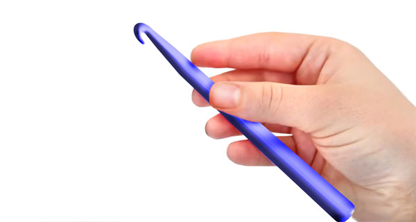


Holding the yarn correctly in your non-dominant hand (usually the left hand for right-handed crocheters) is crucial for regulating tension, which in turn affects the consistency and appearance of your stitches.
The goal is to create a smooth flow of yarn from the ball to your hook, with just enough resistance to keep your stitches even. There are a few variations, but this method is widely used. Here's a common and effective way to hold the yarn:
How to Hold Yarn in Your Left Hand for Tension Control:
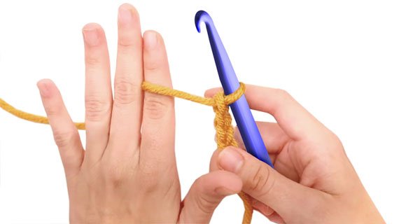
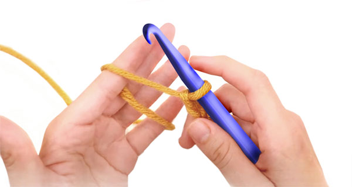

Wrap the Yarn Around Your Pinky Finger: Start by taking the working yarn (the strand coming from the ball) and wrapping it around your pinky finger on your left hand. You can wrap it once or twice, depending on how much tension you need. Wrapping it more times will create more resistance.
- Bring the Yarn Across Your Palm: After wrapping around your pinky, bring the yarn across the inside of your left hand, towards your index finger.
- Guide the Yarn Over Your Index Finger: Drape the yarn over your index finger. Your index finger will act as a guide and a primary point of tension control.
- Hold the Crochet Work with Your Thumb and Middle Finger: Your thumb and middle finger (and sometimes your ring finger) will be used to hold and manipulate the crochet work itself, just below the hook.
Some people prefer to wrap the yarn around their index finger as well, similar to the pinky, for even more tension.
How This Method Regulates Tension:
- Pinky Finger: The wrap(s) around your pinky finger provide the initial drag on the yarn. This prevents the yarn from flowing too freely and creating loose stitches.
- Across the Palm: Bringing the yarn across your palm helps to keep the yarn organized and prevents it from tangling.
- Index Finger: Your index finger is the main control point. By slightly straightening or bending your index finger, you can increase or decrease the tension on the yarn as it feeds to the hook. A straighter finger allows the yarn to flow more easily (less tension), while a bent finger creates more resistance (more tension).
- Holding the Work: Your other fingers holding the work provide stability and allow you to position the fabric correctly for each stitch.
Tips for Effective Yarn Holding and Tension Control:
- Experiment: There's no single "right" way to hold the yarn for everyone. Experiment with wrapping the yarn around your pinky once or twice, or wrapping it around your index finger, to find what works best for you and gives you the most consistent tension.
- Practice: Like any crochet skill, tension control takes practice. Pay attention to how the yarn feels as it flows through your hand and adjust your grip as needed to maintain even stitches.
- Relax: Try not to hold the yarn or your hook too tightly. A relaxed grip will give you more control and prevent your hand from getting tired.
- Observe: If you have a crochet instructor or a friend who crochets, observe how they hold their yarn. You might pick up some useful tips.
- Yarn Type: The type of yarn you are using can also affect tension. Thicker or "stickier" yarns might require less tension from your hand, while thinner or "slippier" yarns might require more.
- By mastering how to hold the yarn in your non-dominant hand, you'll gain better control over your tension, leading to more uniform stitches and a more professional-looking finished project.
Top of the pageBasic Crochet Terms
Before you start crocheting, let's get familiar with the basic terms that will help you better understand the process:
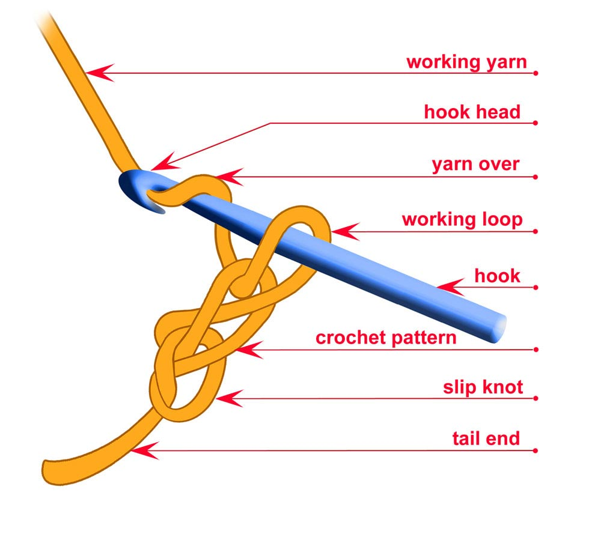
- Crochet Hook:
Crochet Hook is a slender tool with a hooked end, used to pull yarn through loops to create crochet stitches. Crochet hooks come in various sizes and materials (such as metal, plastic, or wood), and the size of the hook affects the size and appearance of the stitches. The hook's tip is designed to catch and draw the yarn through loops, making it the main tool for crocheting.
- Working yarn:
This is the yarn running directly from the ball to your crocheted swatch or item. Correct tension of the working yarn is crucial for evenness and density of your crochet. The working yarn is usually held on the index finger and controlled by the other fingers to regulate tension. The degree of working yarn tension is directly proportional to the desired crochet density.
- Hook head:
It is the very tip of the crochet hook, the part of the hook at the end that has a shape allowing it to catch and pull the yarn through the existing loops when crocheting. The shape and size of this "head" or "tip" can vary slightly among different hooks and manufacturers, which affects how easily the yarn is caught and passes through the loops. The shape and size of the head affect the ease of working and the appearance of the crochet.
- Yarn over:
This is a basic element for forming many types of stitches. A yarn over is created when you bring the working yarn over the hook without immediately working a stitch. This element is needed for forming many types of stitches.
- Working loop:
This is the loop currently on the hook during the crocheting process. The index finger is often used for additional control over the working loop.
- Crochet Work
The crocheted piece is sometimes referred to simply as "work" or "item".
- Slip Knot:
The very first loop from which the crochet work begins.
- Tail end:
This is the segment of yarn remaining after forming the first loop or the initial stage of crocheting. As a rule, it is not used in the main crocheting process. However, if left long enough, the tail end can be useful for sewing crocheted parts together. When performing the "magic ring" technique, pulling the tail end allows you to adjust the size of the ring.
How to make the first loop (Slip Knot) and crochet a Chain Stitch
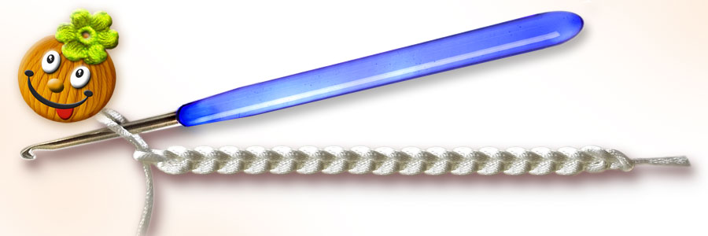
Slip Knot
A slip knot is a fundamental knot used to begin most crochet projects. It creates the initial loop on your hook, from which you will then crochet your first stitch (usually a chain stitch). The key characteristic of a slip knot is that it can be easily tightened or loosened, and it "slips" along the yarn when pulled, hence the name.
The slip knot is essential because it securely attaches the yarn to your hook and provides the starting point for your chain or first row of stitches. Pictures below help to understand how to make a Slip Knot - the very first loop and crochet a chain. Here's a common way to make a slip knot:
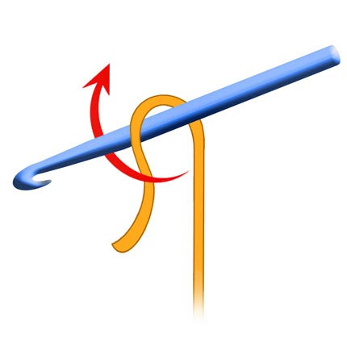
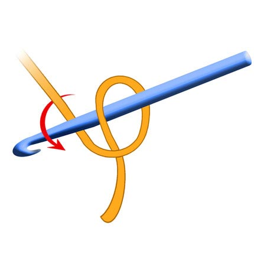
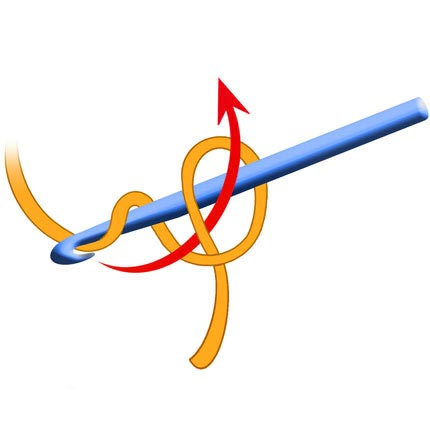
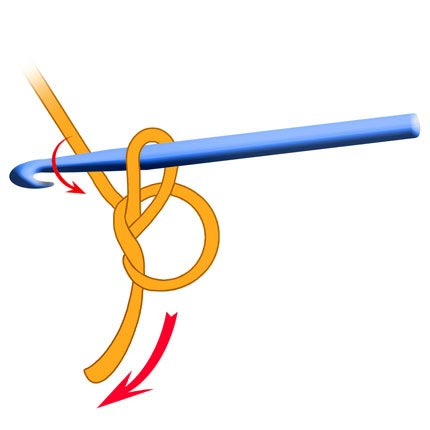
1. Take the end of your yarn and make a loop.
2. Bring the working yarn (the yarn coming from the ball) behind the loop.
3. Reach through the first loop with your crochet hook and grab the working yarn.
4. Pull the yarn through the loop and gently tighten the knot around the hook.
Chain Stitch (Air Loop) and a Chain
Let's try to make the first loop and crochet a chain. Take the thread and hook, as shown in the picture, and repeat the actions. You can also watch a video tutorial. You should get a chain. To prevent it from unraveling, cut the working thread and pull it through the last loop.
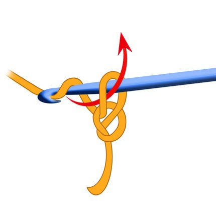
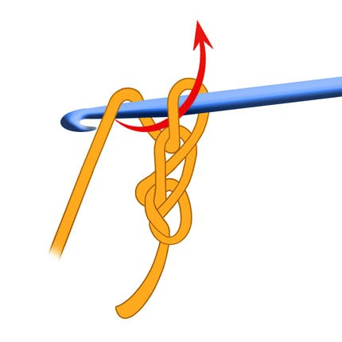
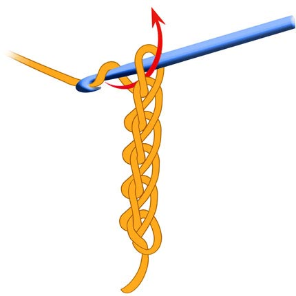
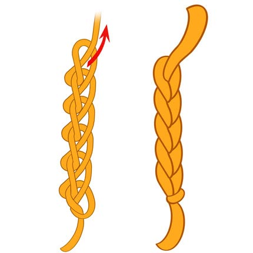
5. Make a slip knot on the hook. Yarn over the hook to pull it through the loop on the hook.
6. Pull the working yarn back through the first loop, creating a new loop on your hook.
7. Gently pull on the ends of the yarn to tighten the knot around your hook.
8. To finish work the working thread should be cut and pulled through the working loop. This will stop crochet to unravel.
You've made one air loop. Repeat these steps to crochet a chain of the desired length. Air loop sometimes used as a synonym for chain stitch, but more often refers to a single loop used to raise a row. Air loop for raising a row: At the end of a row, to move to the next one, make several air loops (the number depends on the height of the next stitch).
Depending on the yarn and density of crochet the chain could look very different. The first picture shows chain made of thin yarn with a big hook, the second chain is made of a fluffy yarn with smaller hook.
Top of the pageLesson 2
Symbols | Chain Stitch | Slip Stitch | Half Crochet | Single Crochet | Double Crochet | Half Double Crochet | Treble Crochet
Crochet charts, abbreviations and conventional signs (Symbols)
When crocheting, the same elements are often used. Each element has a name, for example, "chain stitch" or "single crochet". In addition to the name, the elements have a shortened designation (abbreviation) and a symbol. For example: "Chain stitch" is abbreviated as "CS". "Single crochet" is abbreviated as "SC".
What are symbols and why are they needed?
Symbols schematically depict an object or action. Look at this symbol: no matter what language you speak, you will recognize it in any country - this one 🚻 means "restroom". And this symbol 🚸 shows where you can safely cross the road - "Pedestrian crossing". And this one - 🚦 "Traffic light".
Crochet symbols, are graphic signs used in crochet and knitting patterns to represent various stitches and elements. Imagine them as the alphabet of crochet. Each symbol corresponds to a specific action that needs to be performed with the hook (for example, crocheting a chain stitch, single crochet, double crochet, and so on). The beauty of these symbols is that they are universal. Regardless of the language in which the pattern description is written, if you have a pattern with symbols, you will be able to understand it and crochet the pattern.
Symbols are also used when describing crochet patterns and when depicting chart patterns and designs. They visually resemble the corresponding crochet elements.
Now we will get acquainted with a few of the most frequently used symbols and abbreviations. There are many more crochet techniques. Their names, the most common symbols, abbreviations, photos, and explanations will be provided in a table on a separate page. A video will also be included.
Top of the pageChain Stitch (СH)
CH
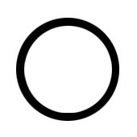
We have learnt how to make a chain stitch or air loop in the previous lesson. Abbreviation for the Chain Stitch is
- CH (or Air Loop - AL).
The Chain Stitch is the beginning of everything—a thread’s first whisper, a path drawn in yarn. It’s made by looping the yarn over the hook and pulling through, again and again, forming a soft braid of interlinked loops. Each chain is a promise of what’s to come—a rhythm of readiness, a breath before the story begins.
In diagrams, the Chain Stitch is often shown as a small circle or oval or a horizontal loop—gentle, open, and continuous. It’s the stitch of beginnings, of bridges, of space between thoughts. In your fairy-tale school, it might be the stitch that says, "Let’s begin."
Top of the pageSlip Stitch (SS)
SS
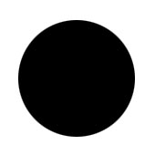
Slip Stitch (abbreviation - SS) is the whisper of the crochet world—subtle, silent, and essential. It doesn’t build height, but it binds, seals, and connects. Used to join rounds, finish edges, or travel across fabric, it’s the stitch that says, “I’m here, but I won’t take up space.”
Its symbol is a small dot—like a pause in a sentence, or a blink in a lullaby. It’s the breath held before the next movement. In your fairy-tale school, it might be the stitch of secrets and endings, the quiet magic that holds everything together.
Top of the pageHalf Crochet (HC)
HC 
Half Crochet (abbreviation – HC) shares structural kinship with the Slip Stitch, yet it’s worked into the base of the previous row or fabric, as shown in the illustrations below. Unlike the Slip Stitch, which seals and joins, the Half Crochet travels—used decoratively along a row for edging, reinforcement, or colorwork. Its visual role shifts with intention.
In such cases, I mark it with a small angle symbol (∧)—a half-cross that echoes the Single Crochet’s ‘X’, but softened and reduced. This reflects its quiet strength and directional flow, honoring its resemblance to the Slip Stitch while recognizing its rhythmic movement across the fabric.
The logic is both visual and functional:
SS for closure and joining—static, central, complete.
HC for movement along the row—directional, rhythmic, embedded.
Thus, the same stitch may wear different symbols depending on its role—like a word that changes meaning in a sentence. My system embraces this nuance, allowing the language of yarn to speak with clarity and grace.
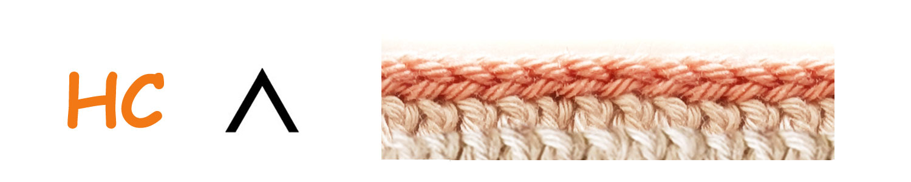
How to make a Half Crochet:
- Insert the hook into the desired loop on the fabric.
- Yarn over.
- Pull the yarn through the loop on the fabric and through the loop on the hook in one go.
- A slip stitch is used to forming a circle of chain stitches, join parts, finish a round when crocheting in a circle, or to move across stitches or between parts of a pattern without creating extra height, decorating the last row or as a part of a pattern scheme.
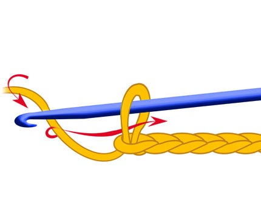
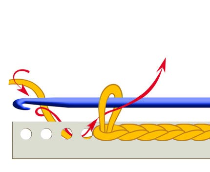
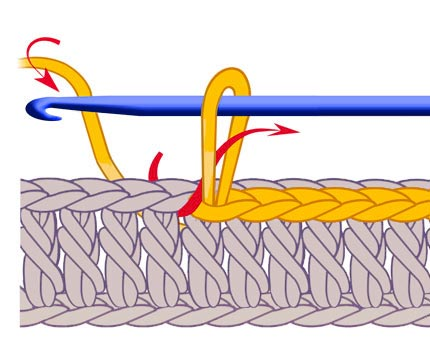
Making a Chain Stitch and a chain
Making Half Crochets on the fabric base
Making Half Crochets on the previous row
Single Crochet (SC)
SC
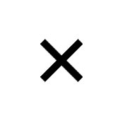
Single Crochet (abbreviation – SC) is one of the foundational stitches in crochet, and it’s especially beloved in the creation of amigurumi toys. Compact, versatile, and rhythmic, the single crochet forms the backbone of many soft and sculptural designs. There are several variations of this stitch, which I’ll explore in later lessons.
The symbol for Single Crochet is a simple cross—like a softly drawn ‘X’. It stands for one firm, grounded stitch: small in size, but mighty in purpose. Just as an ‘X’ marks a meaningful place, this stitch holds the fabric together with quiet strength. You might even think of it as a tiny hug—an embrace in yarn that whispers, “I’m here to hold everything in place."

How to make a Single Crochet:
- Insert the hook into the desired loop on the fabric.
- Yarn over and pull it through the loop on the fabric. There are now two loops on the hook.
- Yarn over and pull it through both loops on the hook in one go.
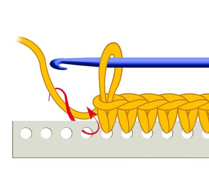
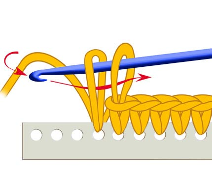
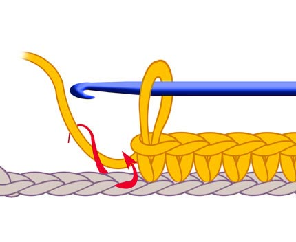
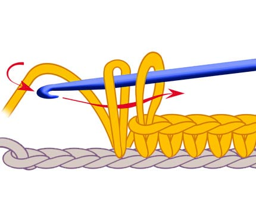
Double Crochet
DC
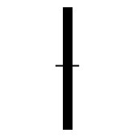
Double Crochet (abbreviation – DC) is a taller, more open stitch—graceful and expansive. It creates soft, airy fabric with a gentle rhythm, often used to build texture, height, and flow. In amigurumi, it’s less common, but in garments and storytelling stitches, it brings breath and movement.
The symbol for Double Crochet is a vertical line with a single slash through it—like a tree with one branch, reaching upward. It stands for a stitch that stretches and lifts, offering space between loops. Where the Single Crochet hugs close, the Double Crochet opens wide, like arms reaching toward the sky. It’s a stitch of expansion, of possibility—a gentle leap in the language of yarn.

How to make a Double Crochet:
- Yarn over.
- Insert the hook into the desired loop on the fabric.
- Yarn over and pull it through the loop on the fabric. There are now three loops on the hook.
- Yarn over and pull it through the first two loops on the hook. There are two loops on the hook.
- Yarn over and pull it through the remaining two loops on the hook.
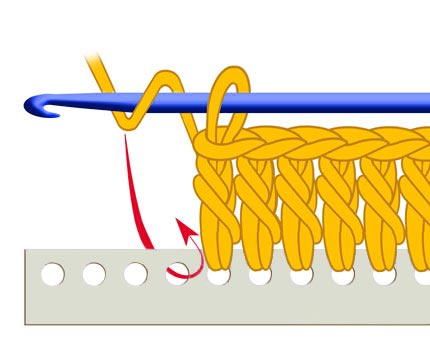
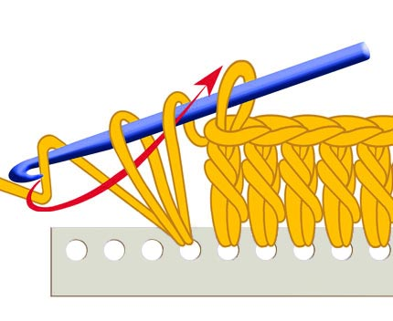
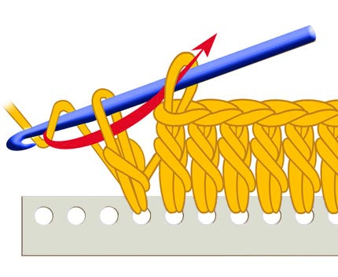
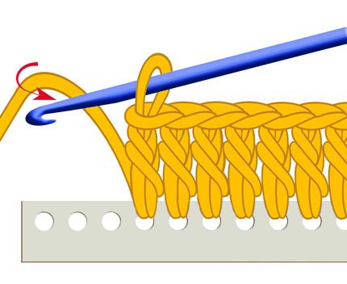
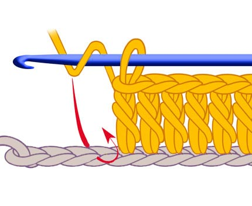
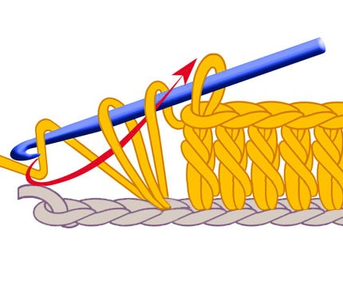
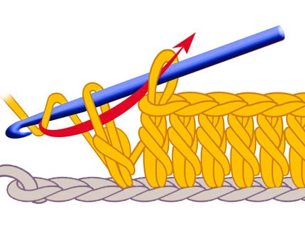
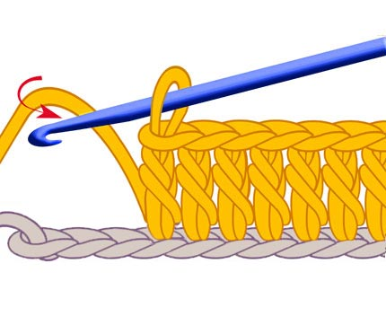
Half Double Crochet
HDC
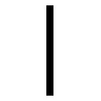
The Half Double Crochet (abbreviation - HDC) is a stitch of balance—neither too tall nor too tight. It offers a soft rise, like a breath between thoughts. Used often in textured fabrics and gentle transitions, it’s a stitch that bridges spaces with grace.
The symbol for Half Double Crochet is a vertical line with a single horizontal bar—like a stem with a leaf, reaching upward but staying grounded. It speaks of rhythm and direction, a stitch that moves forward while holding close. It’s the heartbeat of many patterns: steady, warm, and quietly expressive.

How to make a Half Double Crochet:
- Yarn over.
- Insert the hook into the desired loop on the fabric.
- Yarn over and pull it through all three loops on the hook in one go.
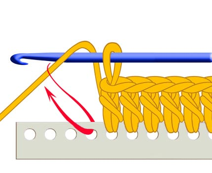
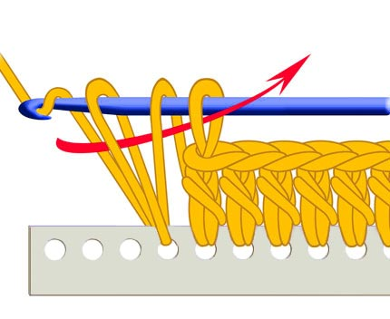
Treble Crochet (TC)
TC
Treble Crochet (abbreviation - TC) is the tallest of the basic stitches—a graceful leap in the language of yarn. It stretches high above the fabric, creating open, airy textures that feel like breath and breeze. Used in lacework, drapery, and expressive designs, it’s a stitch of elevation and elegance.
The symbol for Treble Crochet is a vertical line with two slashes—like a tree with two branches, reaching skyward. It speaks of height and flow, a stitch that dances across space. Where Single Crochet holds close and Double Crochet lifts gently, Treble Crochet soars—an exhale, a flutter, a moment of flight.
It’s the stitch of openness, of dreaming big. In your fairy-tale school, it might be the one that says, “Let’s see how far yarn can fly."

How to make a Treble Crochet:
- Make two yarn overs on the hook.
- Insert the hook into the desired loop on the fabric.
- Yarn over and pull it through the loop on the fabric. There are now four loops on the hook.
- Yarn over and pull through the first two loops (3 loops remain).
- Yarn over and pull through the next two loops (2 loops remain).
- Yarn over and pull through the remaining two loops.
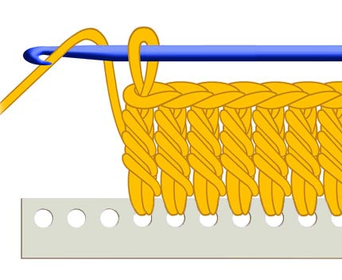
Lesson 3
N Ring | Rolled Ring | Magic Ring | Beginning Crochet | Pattern Chart
Ring of N chain stitches
NR 
This is how to make a ring of N chain stitches (N*CH Ring) to start a crochet motif:
- Make a Slip Knot: Begin by making a slip knot on your hook, just as you would to start any crochet project.
- Chain Stitches: Crochet a specific number of chain stitches. The number of chains you make will determine the size of the central hole in your ring and will be indicated in your crochet pattern. For example, a pattern might tell you to "chain 4" (4R) or "chain 6" (6R).
- Form the Ring: To form the ring, you will join the last chain stitch you made to the very first chain stitch you made (the one closest to the slip knot). To do this, insert your hook into the center of that first chain stitch.
- Make a Slip Stitch: Yarn over and pull the yarn through both the chain stitch and the loop that was already on your hook in one movement. This is a slip stitch, and it connects the two ends of your chain, creating a closed ring.
Now you have a small ring of chain stitches. The number of chain stitches you made initially (before joining) will determine the circumference of this ring.
Working into the Chain Ring:
Once you have your chain ring, you will typically work your first round of stitches into this ring. You'll insert your hook into the centre of the ring (the hole created by the joined chain stitches) and crochet the required number of stitches (single crochets, double crochets, etc., as specified in your pattern).
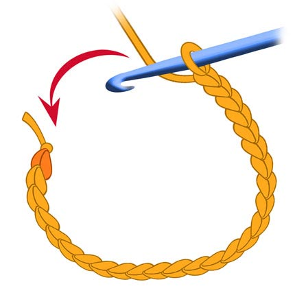
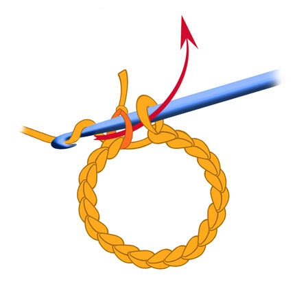
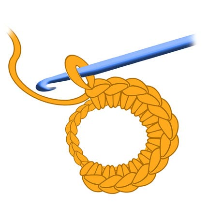
Foundation Ring: Rolled Thread or Plastic Base
FR
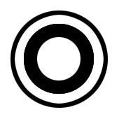
When working in the round, the first stitches often nestle into a ring—a circle that holds the story’s center. Traditionally, this ring is made by joining a short chain with a slip stitch, forming a loop of yarn. But there are other ways to begin:
Rolled Thread Ring: A soft spiral of yarn, wrapped and held gently, into which the first stitches are worked. It’s organic, flexible, and full of warmth—like a nest made by hand.
Plastic Ring Base: A firm, ready-made circle that offers structure and clarity. It’s especially useful for decorative pieces, ornaments, or when you want a clean, defined center. The stitches wrap around it like vines on a trellis, turning something rigid into something tender.
Each ring—whether made of yarn or plastic—serves as the heart of the round. It’s the place where characters gather, where stories begin, where the first stitch takes root.
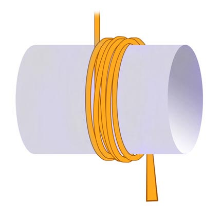
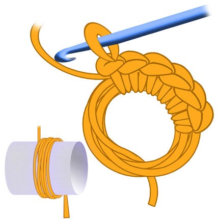
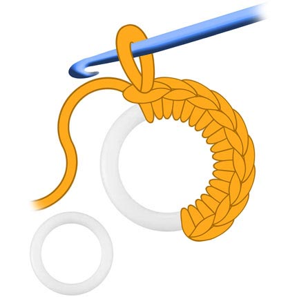
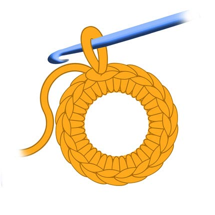
Magic Ring (Amigurumi Ring)
AR
Magic Ring or Amigurumi Ring is used to start crocheting in a circle without a central hole, which is especially important for amigurumi toys.
Making an adjustable Magic Ring (sometimes called Amigurumi Ring)
- Take the end of the yarn and wrap it around your fingers to create a ring.
- Secure the ring (optional but recommended): Sometimes, especially for amigurumi, you'll crochet one or two chain stitches after making the first loop on your hook in the magic ring. This helps to secure the ring before you start the single crochets. The number of chains depends on the height of the stitches you'll be using in the first row (one chain for single crochet, two for half double or double crochet, etc.).
- Insert your hook into the magic ring: Put your hook under both parts of the yarn ring you formed around your fingers.
- Yarn over and pull through: Grab the working yarn with your hook and pull it back through the magic ring. You now have two loops on your hook (the original loop and the one you just pulled through).
- Complete the single crochet: Yarn over again and pull the yarn through both loops on your hook. You have just completed your first single crochet into the magic ring.
- Repeat: Continue inserting your hook into the magic ring, yarning over and pulling through, and then yarning over and pulling through both loops on your hook, until you have the required number of single crochets for your first row (this number will be specified in your pattern, e.g., "6 sc into magic ring").
- Tighten the ring: Once you have completed all the single crochets for the first row, gently pull the tail end of the yarn (the short end you used to form the ring) to close the central hole. This is the "magic" of the magic ring!
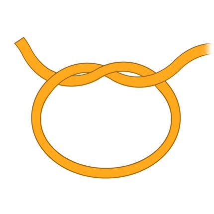
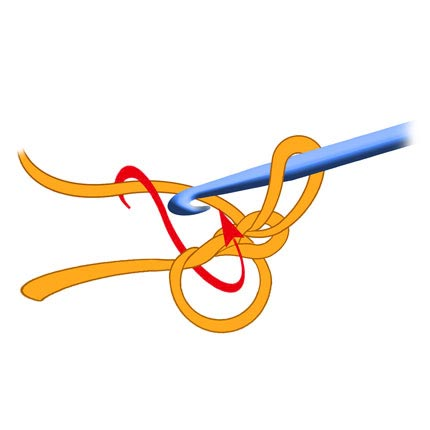
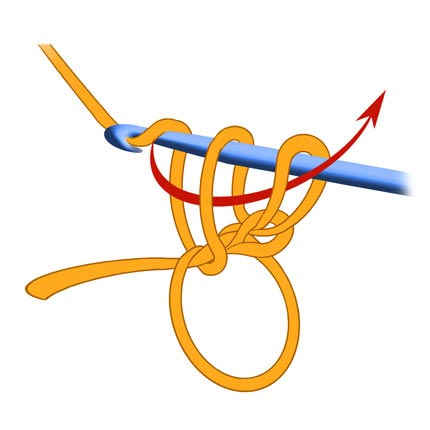
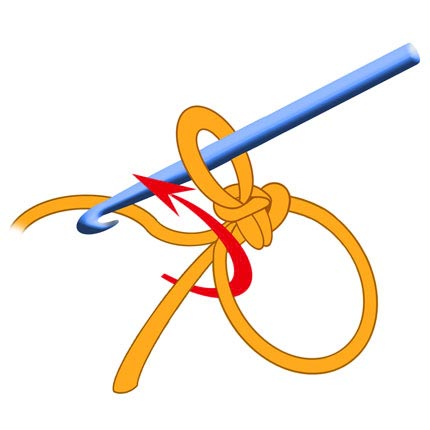
1. - Take the end of the thread and wrap it around your fingers to create a ring.
2. Insert the hook under both parts of the ring. Yarn over and pull it through, making the first loop.
3. Start making stitches into the loop.
4. The first single crochet made in the loop.
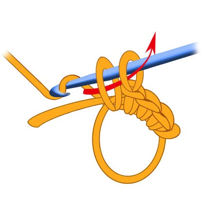
5. Crochet the required number of stitches (single сrochets or double crochets, etc) for the first row inside the ring.
6. Pull the free end of the thread to tighten the ring and close the central hole.
7. Amigurumi ring made of six single crochets.
8. Ring of single crochets made into the chain. See the difference with Amigurumi Ring.
When to use a Chain Ring vs. a Magic Ring:
Chain Ring often used when a small, non-adjustable central hole is desired, or when working with stitches that are taller than single crochet in the first round. It's also a simpler technique for beginners.
Magic Ring (Amigurumi Ring) is ideal for amigurumi and other projects where you want a tightly closed center with no visible hole. It's adjustable, allowing you to pull the tail yarn to close the ring after the first round of stitches is completed.
Both methods are valid ways to start working in the round, and the choice depends on the desired outcome and the specific crochet pattern you are following.
Where does crocheting begin?
Depending on what you want to crochet, your crocheting can begin with a chain of stitches or a foundation cord if you plan to crochet a fabric. The fabric is crocheted in rows back and forth; you turn the work when you finish a row. Sometimes you will need to make several chain stitches (Turning Chain) to move to the next row.
You can also crochet in a circle or a spiral. In this case, a ring is made from a chain of stitches by joining the very first stitch of the chain with the working loop on the hook with a slip stitch. Then you can crochet stitches under the chain or into the chain, as shown in the drawing.
Sometimes, instead of a chain, you can use yarn wraps as a base. This results in a rather lush first row, which is suitable for crocheting floral motifs.
The "Magic ring" (amigurumi ring) allows you to start crocheting in a circle without a hole in the center. The ring is called "magic" because it can be made very small by tightly pulling the free end of the thread. This technique is often used when crocheting elements of amigurumi toys - heads, bodies, etc. How to make a magic ring is shown in the drawings below.
It is important to remember that a crocheted sample looks different on the front and back sides. When crocheting in the round, the front and back sides are clearly visible. The front side looks nicer and smoother. Thread connections and knots are usually hidden on the back side of the product. When crocheting a flat piece, since we crochet rows back and forth, turning it at the end of the row, the difference between the front and back sides depends on the chosen pattern. Sometimes it is almost invisible, sometimes it is very clearly visible.
I suggest you try making the first loop and crocheting a chain. Take the yarn and hook, as shown in the previous image, and follow the instructions in the drawings. You can also watch a video tutorial.
Great, I hope, you've got a chain! Now, to prevent it from unraveling, cut the working thread and pull it completely through the working loop.
Top of the pageCrochet Pattern Chart
A Crochet Pattern Chart is a graphic representation of a pattern or an entire item. It consists of rows or rounds on which the symbols are arranged in the sequence in which they should be crocheted. The pattern shows where to insert the hook, what stitches to use, and how many times to repeat them. Patterns can be very simple, showing only one repeating element, or very complex, describing an entire item with various patterns and shapes. Reading a pattern is like following a map that leads you to the finished item.
A Repeat is a repeating part of a pattern. In a pattern, the repeat is usually highlighted with a frame of stars or brackets. When you crochet according to the pattern, you repeat this highlighted section (repeat) the required number of times in each row or round to create the entire pattern. Understanding the repeat is very useful because, having mastered it, you will be able to easily repeat the pattern over a larger area, for example, when crocheting a scarf, blanket, or clothing.
Example Pattern:
Let's imagine a simple pattern for a pattern consisting of alternating single crochet and chain stitches. Imagine that we have a row that begins with several chain stitches for lifting (for example, one chain stitch for lifting if the next row will consist of single crochet).
Row 1: Chain of chain stitches. (In the pattern, this will look like a row of small circles).
Row 2: One chain stitch for lifting (a small circle at the beginning of the row). Then we crochet a single crochet (the "plus" symbol) into the first stitch of the previous row. Then we crochet a chain stitch (the "circle" symbol). Then we crochet a single crochet into the next stitch of the previous row. And so we alternate single crochet and chain stitch until the end of the row. At the end of the row, we crochet a single crochet into the last stitch.
Row 3: One chain stitch for lifting. Then we crochet a single crochet into the first single crochet of the previous row. Then we crochet a chain stitch. Then we crochet a single crochet into the next single crochet of the previous row (skipping the chain stitch of the previous row). And so on. In the pattern, this will look something like this (this is a simplified text representation; in a real pattern, graphic symbols are used).
Row 4: Like Row 2.
Row 5: Like Row 3.
Row 6: One chain stitch for lifting. Then we crochet a single crochet into the first single crochet of the previous row. Then we crochet a chain stitch. Then we crochet a single crochet into the next single crochet of the previous row (skipping the chain stitch of the previous row). And so on. In the pattern, this will look something like this (this is a simplified text representation; in a real pattern, graphic symbols are used).
Top of the pageLesson 4
V/X Single Crochet| Increase / Decrease | Insertion Point | Texture / Directionality | Sides of Fabric | Architecture
The Secrets of the Single Crochet Stitch

A Universe in One Loop
The single crochet is more than a stitch — it’s a language we speak with yarn. It can be gentle, firm, ribbed, mirrored. It’s our ally in crafting fairy tales from thread. Every stitch is a breath. Every hook movement is a wand’s flick.
The single crochet (SC) is the most common stitch in toy-making. It creates a firm, seamless texture, perfect for shaping both flat and 3D forms. SC is the king of amigurumi, the wizard of dense fabric, the humble hero behind every bunny and teddy.
Let’s Recall: How to Make a Single Crochet Stitch
Before we begin, let’s revisit the colours and markings used in the illustrations:
- Orange yarn represents the working yarn and the current row being created.
- Beige yarn shows the foundation row — the previous stitches that form the base.
- The red arrow points to the exact loop where the hook should be inserted.
Now, step by step:


1. Insert the hook under the loop marked by the red arrow — this loop belongs to the beige foundation row. This is the moment of quiet contact — the hook reaches beneath the surface to begin the stitch.
2. Yarn over with the orange working thread and pull it through the loop. You now have two loops on your hook — one from the base, one from the working yarn.
This is shown in the image — the breath before the stitch takes form.
Yarn over again and pull the orange thread through both loops on the hook.
3. The single crochet stitch is complete — simple, strong, and serene.
The Image 3 shows the finished stitch — a small bridge of quiet strength.
Not Just a Stitch — A Shape-Shifter
The single crochet is often seen as the simplest building block. But in truth, it’s a shape-shifter. Its appearance and behaviour depend on:
- How you wrap the yarn
- Where you insert the hook
- How you finish the loop
Small changes create entirely new textures.
Yarn Over Direction: The Birth of V or X-shaped Single Crochet
🔶 Standard - Traditional Yarn Over (YO): Creates a V-shaped stitch — smooth, symmetrical, classic. It’s the most familiar method and slightly faster for many crocheters

🔶 Reverse Yarn Over (Yarn Under): This technique produces an X-shaped single crochet stitch — tighter, more textured, and with a subtle leftward lean. It’s especially useful when the fabric will be embroidered or worked in alternating colours, as it helps maintain a stable and clean structure. The X-shaped single crochet is a favourite in amigurumi crafting, where precision and firmness are key. The X-shaped stitch holds secrets tightly — a quiet knot of strength beneath the surface.

Invisible Increases and Decreases
🔶 Invisible Increase: Work two SC into the same stitch, slightly staggered to avoid bulk.

🔶 Simple Decrease can be made by skipping a stitch, though this may create a visible gap.

🔶 Invisible Decrease: Insert hook into front loops of two stitches, yarn over and pull through — smooth and seamless.
🔶 Softened Decrease: Pull up a loop from the skipped stitch, but don’t finish it — instead, complete it together with the next stitch. This reduces visual gaps.
🔶 Double-Stitch Decrease: Crochet one stitch across two loops — effective but often too visible, especially in tight or textured work.
Top of the pageInsertion Point: Where the Hook Enters Matters
By changing where you insert the hook, you unlock a surprising variety of textures. Small changes in hook placement can transform the same simple stitch into decorative ridges, ribbing, or sculpted surfaces.
Single crochet can be worked in several ways:
🔶 Through Both Loops (standard method): The traditional and most balanced technique. It is the default choice for most amigurumi projects.
🔶 Front Loop Only (FLO): Inserting the hook into the front loop leaves the back loop untouched, forming a visible ridge behind the stitch. When combined with X-shaped single crochet, it helps maintain straight vertical alignment with no leftward drift.

🔶 Back Loop Only (BLO): Working into the back loop leaves a ridge on the front. Often used to create ribbing, flexible edges, or textured surfaces. The ridge left behind is like a quiet echo — a memory of the stitch that shaped it.
🔶 Into the Previous Row: Inserting the hook into the row below instead of the top loops creates a taller stitch known as extended single crochet. This adds height and depth in coloured work.

Into Rows Below: Working into rows further down produces dramatic textured effects and sculptural surfaces.
Under the Loop from the Front or Back Side: Changing the angle of insertion subtly changes the stitch’s appearance and direction.
Top of the pageTexture and Directionality
🔶 Front Post Single Crochet (FPSC)
This technique pushes the stitch forward, creating a raised, sculpted ridge on the surface of your work.
— How to do it: Instead of inserting the hook into the top loops, insert it from the front to the back, then out to the front again around the vertical post of the stitch from the previous row.
— Best for: Creating sharp transitions, highlighting edges, or adding decorative vertical lines. It is perfect for shaping the border of a shoe sole or the rim of a flower pot.
🔶 Back Post Single Crochet (BPSC)
This pulls the stitch slightly inward, forming a recessed groove and a clean "step" in your fabric.
— How to do it: Insert the hook from the back of the work to the front, then out to the back again around the post. Yarn over and complete the stitch as usual.
— Best for: Reinforcing an area, creating sharp fold lines, or forming a 90-degree angle in your work (e.g., when moving from the base of a toy to the body). It helps the fabric "turn the corner" neatly.

The Two Sides of Crochet Fabric
🔶 Crochet fabric has a right side (Picture 1) and a wrong side (Picture 2), and learning to recognise them is an important step in mastering the stitch.
🔶 In the round: The work is never turned. One side naturally becomes the right side, while the inside becomes the wrong side.
🔶 Flat rows: The work is turned after every row. The right and wrong sides alternate (Picture 3).

Making the Fabric Look Consistent:
Reverse View Single Crochet (Picture 4): A special method where the back looks like the front. On wrong-side rows, the hook is inserted from the back of the work. This ensures even flat fabric keeps a neat and consistent texture.
How to Avoid Slanting Stitches
When crocheting in the round, SCs may slant. Solution: Use BLO + X-shape (Picture 5) — it stabilises the fabric and keeps the shape perfectly aligned.
Creating Texture: The Chevron-like Ridges
When you combine Back Loop Only (BLO) with flat, back-and-forth rows, something magical happens. Instead of a flat surface, you create a beautiful, textured pattern that resembles architectural chevrons or soft waves (Picture 6).
The Technique: Simply work every Single Crochet into the back loop of the stitch from the previous row.
The Result: Because you turn your work every row, the ridges alternate, forming a dense, stretchy, and ribbed fabric.
This pattern is a favourite for creating "knitted-look" sweaters for toys, cosy blankets, or decorative elements where you want to add depth and tactile rhythm to your creation. It’s the perfect example of how one small change in hook placement can transform a simple stitch into a work of art.
The Architecture of Flat Rows: Keeping it Square
When you transition to flat rows, the single crochet requires a bit of extra "support" to stay perfectly straight.
🔶 The Turning Chain: To keep the edges of your fabric from pulling, you must add one air loop (chain 1) at the end of each row before turning your work. Without it, your edges will be tight and "stepped."
🔶 The "First Door" Rule: After you turn, always insert your hook into the very first stitch from the hook (ignoring the turning chain itself). Skipping this makes your row shrink (staircase effect). Conversely, if you crochet into the chain and the first stitch, you will accidentally add an extra loop (fan effect).
💡 Master’s Secret: To be 100% sure your fabric isn't growing or shrinking, count your stitches at the end of every row!
Changing Yarn Invisibly
To change colours without a bump:
🔶 Complete the last yarn-over of the previous stitch with the new colour.
🔶 Continue with the new yarn for a seamless transition.
🔶 To end a row invisibly, use a slip stitch or invisible join.
✨ Conclusion — The King with Many Masks
From a single simple motion of the hook grows an entire world of textures, structure, and character. By changing yarn direction, hook placement, and working method, one stitch transforms into many.
Master the single crochet, and you hold the key to countless possibilities hidden inside one small loop.
Top of the pageLesson 5
2D Motives | SC Round | SC Square | SC Triangle | SC Oval | DC Round | DC Square | DC Triangle | Granny Square | Floral Hexagonal Motif | African Flower
Starting a Crochet Motif
As a rule, motifs are worked in the round. This means they have a permanent right side (facing you) and a wrong side (facing away).
Depending on your pattern, you can start a motif in several ways: with a Chain Ring, a Ring of Rolled Thread, or a Magic Ring if you want to avoid a hole in the centre.
There are also different ways to move from one round to the next:
— Joined Rounds: Each round is finished with a slip stitch, and you "climb" to the next level using turning chains.
— Spiral Rounds: You work continuously without joining, which is a common technique for flat motifs made with single crochets.
When working with multiple colours, rounds are usually closed before changing the yarn. The new row then begins with a fresh thread of a different colour. For more advanced projects, you might encounter techniques like a two-colour spiral, where two threads dance together in a continuous loop — but that is a secret for another lesson!
Before we dive into creating these beautiful shapes, let's look at how to begin. I will remind you how to make a Chain Ring, which is the foundation for many projects, and then we will explore other professional ways to start your work.
Top of the page🔶 Ring Made of Rolled Thread
A firm rolled-loop technique, perfect for sturdy lacework.
— Wrap the thread multiple times around the hook (similar to a bullion stitch).
— Carefully slide the hook through the rolled loops and secure.
Creates a thick ring, often used as a decorative centre or motif base.
Symbol: A small coiled shape, indicating rolled texture.

🔶 Chain Ring
A simple foundation ring, made entirely from chains.
— Chain six to ten stitches (depending on the desired ring size).
— Slip stitch into the first chain to close the loop.
This ring serves as a base for circular designs.
Symbol: An open circle, showing chains forming the loop.
🔶 Magic Ring (Amigurumi Ring)
A secure, adjustable loop used to start amigurumi or circular crochet. It allows you to close the central hole completely.
— Wrap the yarn around your fingers to create a ring.
— Insert the hook under both parts of the ring, yarn over, and pull up a loop.
— Crochet one air loop (chain) to secure.
— Work the required number of stitches (e.g., single crochets) inside the ring.
Pull the free end of the thread to tighten the ring and close the hole.
Symbol: A small circle with stitches worked around it.

Perfect Flat Shapes in Single Crochet (SC)
🔶 How to Make a Perfect Round Motif
Creating a perfect round motif requires understanding how to increase stitches to keep the circle flat. If you don't increase enough, it will curl into a bowl; if you increase too much, it will become wavy.
The Golden Rule: Add the same number of stitches in each round as you had in your first round.
Flat Round Pattern (Starting with 6 SC):
Round 1: Magic ring, 6 SC inside the ring → 6 SC total.
Round 2: Increase in every stitch → 12 SC total. (Work two SC into each stitch of the previous round).
Round 3: (2 SC, inc) repeat 6 times → 18 SC total.
Round 4: (3 SC, inc) repeat 6 times → 24 SC total.
Round 5: (4 SC, inc) repeat 6 times → 30 SC total.
Round 6: (5 SC, inc) repeat 6 times → 36 SC total.
Tips for a Perfect Round:
— Use a stitch marker: Place it in the first stitch of each round to keep track of your increases.
— Check your tension: Consistent tension is crucial for a smooth, flat fabric.
🔶 Square Motif (Flat Square in SC)
A square shape is formed by increasing only at four corners while maintaining straight edges.
Round 1: Magic ring, 4 SC inside the ring (4 stitches total).
Round 2: Increase in every stitch → 8 SC total.
Round 3: SC in each stitch except at the corners. In each corner, work (SC, 2 ch, SC) → 12 SC total.
Round 4: SC in each side stitch; in corners work (SC, 2 ch, SC) → 20 SC total.
(Note: Each round adds 8 stitches in total because of the corner increases).

🔶 Equilateral Triangle Motif (60° Triangle)
An equilateral triangle forms when increases occur only at the three corners, maintaining symmetry.
Round 1: Magic ring, 3 SC inside the ring (3 stitches total).
Round 2: In each stitch (corner), work (SC, 2 ch, SC) → 6 SC total.
Round 3: SC in side stitches; in corners work (SC, 2 ch, SC) → 12 SC total.
🔶 Oval (Elongated Flat Shape)
An oval is created by working SC along a foundation chain and increasing at both rounded ends.
— Chain X (the length of your centre line).
— Work SC along one side of the chain.
— Work 3 SC into the last chain stitch to turn the corner.
— Work SC along the other side of the chain.
— Work 3 SC into the first chain stitch to complete the first round.
In subsequent rounds, maintain straight sides and increase only at the two rounded ends to retain the oval form.
Perfect Flat Shapes in Double Crochet (DC)
When we move from Single Crochet to Double Crochet, the "maths" of the circle changes. Because a DC stitch is taller, it needs more space to stay flat. If you start a DC round with only 6 stitches, it will turn into a cone almost immediately!
🔶 Flat Double Crochet Round Motif
For a perfect flat circle in DC, the magic number is usually 12.
— Round 1: Start with 12 DC into a magic ring.
— Round 2: Increase in every stitch (24 DC).
— Round 3: (1 DC, inc) repeat 12 times (36 DC).
This consistent progression ensures your motif remains as flat as a pancake.
🔶 Flat Double Crochet Square Motif
Similar to the SC square, but the taller stitches make it grow much faster. To keep the corners sharp and the sides straight, we often use a combination of DC, chain 2, DC in each corner.
🔶 Flat Double Crochet Triangle Motif
A bold, geometric shape where increases happen at three points. Using DC makes the triangle soft and airy, perfect for bunting or decorative patches.
🔶 His Majesty Granny Square
The most iconic motif in the world of crochet! It is built from "clusters" (usually 3 DC) separated by chains. It’s called "His Majesty" for a reason — once you master the Granny Square, you can create anything from blankets to cardigans.
🔶 Floral Hexagonal Motif
A stunning, decorative motif that blooms from the centre. While it looks complex, it’s simply a clever arrangement of DC clusters and long stitches that define the petals. Usually made with at least three colours to show off the floral pattern.
🔶 African Flower (6 corners)
A stunning, decorative motif that blooms from the centre. While it looks complex, it’s simply a clever arrangement of DC clusters and long stitches that define the petals. Usually made with at least three colours to show off the floral pattern.
Lesson 6
3D Shapes | SC Ball | SC Oval | SC Tube | SC Cone | SC Cube
Mastering Volumetric (3D) Shapes (Amigurumi Basics)
Volumetric Crochet Forms: From Basic Shapes to Creative Characters
In crochet, almost every complex object can be built from a small number of simple geometric shapes. Understanding these basic 3D forms makes it much easier to design toys, characters, and decorative objects.
In this lesson, we will explore:
All complex crochet figures begin with a few fundamental shapes.
These five forms are the foundation of most crochet toys and decorative models.
- The Five Core Volumetric Shapes: Sphere, Ellipsoid, Cylinder, Cone, Cube.
Each of these forms can be described mathematically and built using a simple sequence of increases, straight rows, and decreases.
- Derived forms built from them: Matryoshka-body, Egg-shape, Carrot-shape, Ovoid-cone, Hat-form, Boot, Heart, Bird-body, Pig-body, Doll-body (two legs),
- Examples of creative objects made using these forms: Booty-leg, Plummy-Flying Pig, Tootty-Fruity, Beezzy-Bee, Pinky-birdy, Milly-doll.
Once you learn to recognize and build these shapes, you will be able to design your own characters and objects with confidence.
🔶 3D Single Crochet Ball Shape (Sphere)
The sphere is the most fundamental crochet form.
To create a perfect ball, we follow a simple rhythm: a section of increases, a section of "straight" rounds (no increases), and a mirrored section of decreases. This is the heart of amigurumi.
Typical uses: heads, fruits, berries, decorative elements.
The sphere is also the starting point for many other shapes.
🔶 Volumetric Single Crochet Oval Shape (Ellipsoid Shape)
An ellipsoid is a stretched or flattened sphere. It is formed by: adding extra straight rows or compressing the shaping sequence
Ellipsoid could be also built on an oval base, started with a foundation chain (like the flat oval). By keeping the increases at the ends, we create a shape perfect for toy bodies, paws, boots. Ellipsoids are among the most useful forms in toy design.
🔶 Tube Shape (Cylinder or Sausage-like shape)
Tube is the simplest 3D form. The cylinder is formed by:
- creating a circular base,
- crocheting straight vertical rows,
- finishing without shaping.
Alternatively it could be started from a magic ring. Following a ball pattern, once you reach the desired diameter, simply stop increasing and work "round and round." This is how we make arms, legs, stems, and long necks for our characters.
🔶 Volumetric Cone Shape (Gonk Hat)
The cone introduces directional shaping. This shape is usually created by gradual decreases from a wide base, shaping toward a point
Typical uses: hats, trees, noses, decorative tips
To get that iconic long, pointy hat, we decrease very slowly — for example, only 2 or 3 times per round. This creates a gentle slope that gives the Gonk-hat his charming behaviour and style.
🔶 Cube Shape
A cube is a marvel of geometry. The cube is a structured shape with flat faces. A cube can be created by joining flat squares together or by crocheting in the round and forcing sharp "corners" using specific decrease and fold techniques. Typical uses: boxes, blocks, dice, geometric toys. The cube teaches edge definition and spatial structure.
Part 2 — Volumetric Derived Forms
Once the basic shapes are mastered, more complex forms can be created by combining and modifying them. These derived forms expand the creative possibilities dramatically.
Oval-Cone Form
This form combines: an oval base and gradual tapering. Typical uses: gnome bodies, boots, decorative figures It creates stable forms with a wide base and a narrower top.
Boot Form
The boot form evolves from: an oval base, asymmetric shaping.
Typical uses: shoes, character footwear, stylised legs. It introduces directional shaping and asymmetry.
Bird Body Form
This form is based on: an elongated ellipsoid, slight tapering.
Typical uses: birds, small animals, decorative figures. It is simple but extremely versatile.
Pig Body Form
This is a horizontal ellipsoid with extensions. Typical uses: pigs, sheep, puppies, cats, cows, rounded animals. Additional elements such as heads, tails, snouts can be added later.
Doll Body Form
This form combines: an elongated body, lower extensions (legs). Typical uses: dolls, human characters, standing figures. It introduces structural balance and proportions.
Matryoshka Form (Figure Eight Form)
This important form is built from: an ellipsoid, a narrowing section, a spherical head. It resembles a figure-eight structure. Typical uses: chicks, bees, small animals, stylized characters. This is one of the most valuable transitional shapes.
Hat Form
The hat form combines: circular shaping and flat extension. Typical uses: hats, mushrooms, decorative tops. It introduces horizontal shaping.
3D Heart Form
This decorative form combines: symmetrical shaping, curved upper sections. Typical uses: ornaments, gifts, character decorations.
It teaches compound curvature.
From Simple Forms to Structured Bodies
Once basic shapes are mastered, we can begin to combine them. New forms are created by joining volumes, adding extensions, or shaping multiple parts. This is how simple geometry becomes the structure of living bodies.
Part 3 — Creative Applications
After learning both basic and derived shapes, it becomes possible to build real objects and characters.
These include: dolls, animals, birds, decorative objects, geometric toys, themed characters. By combining shapes creatively, even complex figures become manageable. For example: a bee can be created using the Chick Body Form, a bird can be built from an ellipsoid,
a monk can be created using an oval-cone body, a hat or a mushroom can be added using the hat form. The possibilities are nearly endless.
From Bodies to Characters
When body forms are complete, small details bring them to life. Wings, ears, hats and expressions transform simple structures into recognizable characters. This is where imagination begins to play.
Meet our borne out of the shapes family: Booty-leg, Plummy-Flying Pig, Tootty-Fruity, Beezzy-Bee, Pinky-birdy, Milly-doll.
Part 4 — Learning Through Construction
This structured approach teaches: spatial thinking, geometric understanding, creative design, independent pattern building. Instead of memorising patterns, students learn to build shapes logically. This transforms crochet into a creative and educational tool.
Conclusion
Crochet is more than a craft — it is a form of spatial geometry.
By mastering: the five basic shapes, derived forms and creative combinations you gain the ability to design your own models and characters. Every new figure becomes an exploration of form, proportion, and imagination. This is the beginning of your journey into 3D crochet design.
Our Crochet School Principle: Understand — Don't Copy
Instead of memorising patterns, learn to see the shape and feel the stitches.
Learn to Understand — Not Just to Follow "Don't count first — imagine first."
In many crochet tutorials you are given exact numbers: how many stitches to add, where to decrease, when to change shape. This is useful — but it is only the beginning.
In this school, the most important goal is not to copy — but to understand the idea behind the shape.
Try to see the form before you make it. Imagine how the body grows, where it widens, where it narrows. Ask yourself: Where does this shape need more space? Where does it need to become smaller?
When you begin to think this way, crochet becomes not just counting stitches — it becomes creating form. Feel the Shape, Not Only the Numbers
There is no universal calculation that works for every yarn. The same pattern made with thin yarn will look completely different from the same pattern made with thick yarn. Many things affect the result: thickness of yarn, size of the hook, tension of your stitches, softness or firmness of the stuffing your own style of crocheting. Because of this, no single calculation is perfect for everyone. Instead of memorising numbers, learn to feel the shape. With time and practice, you will begin to sense: where to add stitches, where to decrease, when the form looks balanced, when it needs correction.
This feeling grows with experience. It Is Normal to Redo Your Work. Sometimes the shape does not turn out as expected. Sometimes you see that the proportions are not quite right. This is completely normal. Even experienced makers sometimes unravel their work and try again. Redoing is not failure — it is part of learning and creating.
Do not be afraid of mistakes. Mistakes teach your hands and eyes to understand the form better. Keep the Yarn Continuous When Possible. When working on complex shapes, it is often better not to cut the yarn too early. Keeping one continuous yarn allows you: to move naturally from one part to another, to correct mistakes more easily, to undo rows without extra knots, to keep the inside of the toy clean and neat.
Think ahead: Where will the next part be? How can the yarn travel inside the shape? This way of working helps you become more confident and flexible. There Is No Single "Correct" Way in Creative Work
In creativity, there is rarely one perfect method. Different makers use different approaches — and many of them are valid. There is no strict line between "right" and "wrong" when you are creating your own design. The best result is not the one that follows rules exactly — it is the one that feels right to you and makes you happy when you look at it. If you like the shape, if it feels balanced in your hands, if it makes you smile — then it is correct.
After Lesson 6
At this stage you already have all the core skills needed to crochet amigurumi toys and simple projects.
You can:
🔸 read crochet patterns and charts
🔸 work in rows and in the round
🔸 control shaping with increases and decreases
🔸 create flat and three-dimensional forms
The following lessons expand your creative possibilities with decorative stitches, edgings, cords and textured patterns.
Top of the pageLesson 7
DTC | Puff | Shell | Fan | Crown Fan | Cluster | Bobble | Popcorn | FPDC | BPDC | Split X,Y | Bullion | Picot | Petal | Loop
Rare and Special Crochet Elements
Double Treble Crochet
🔸 Make three yarn overs on the hook.
🔸 Insert the hook into the desired loop on the fabric.
🔸 Yarn over and pull it through the loop on the fabric. There are now five loops on the hook.
🔸 Then work off two loops together until only one loop remains on the hook.
Puff Stitch
A soft, raised stitch that adds volume and texture.
🔸 Usually starts with a yarn over (unless otherwise indicated in the pattern).
🔸 Insert the hook into the specified loop or arch.
🔸 Yarn over, insert hook into stitch, and pull up a loop (three loops on the hook).
🔸 Yarn over again, insert hook into the same stitch, and pull up another loop (five loops on the hook).
🔸 Repeat until the desired puff height is achieved (usually 5-7 loops total).
🔸 Yarn over and pull through all loops at once.
🔸 Chain one to secure the puff.
🔸 Yarn over and pull it through, drawing the loop up to the height of a double crochet.
🔸 Repeat these steps (yarn over, insert hook, pull yarn with drawing up the loop) several times in the same loop/arch (the number of repetitions depends on the desired puffiness). There will be many loops on the hook.
🔸 Yarn over and pull it through all the loops on the hook in one go.
🔸 Often secured with an air loop.
Symbol: A small oval or teardrop shape in diagrams.
Shell Element
Several double crochets (or taller stitches) worked into the same stitch without chain spaces between them.
The stitches sit tightly together and form a compact, rounded shell shape.
The shell element is similar to the fan element, but tighter and more rounded.
🔸 Work five double crochets (or any odd number, typically 5–7) into the same stitch, loop, or space.
🔸 Skip a stitch or two before repeating the shell.
🔸 Used for delicate lace-like patterns and decorative trims.
Symbol: Small curved shell shapes in diagrams.

Fan Element
A group of stitches worked into the same stitch with chain spaces between them.
The chains separate the stitches, allowing the shape to open and spread like a fan.
The fan element creates a dramatic arched spread, often used in decorative edges.
🔸 Work multiple double crochets (typically 5–7) into the same stitch or space, separated by chains.
🔸 This creates a semi-circular fan effect that spreads outward.
🔸 Often separated by chains or stitches to maintain spacing.
Symbol: Curved lines resembling a fan spread.

Crown Fan Element
A fan worked with a chain space in the center, often finished with picots.
The central chain space creates the characteristic crown-like point at the top.
🔸 Crochet several stitches (for example, 2–4 double crochets) into one loop or arch of the previous row, make a few chains or a picot, then work the same number of double crochets into the same loop or arch again.
🔸 This creates a beautiful crown-like shape.

Cluster Element
A cluster stitch is the inverted counterpart of a shell stitch. While a shell is formed by several stitches worked into the same stitch and spreading outward, a cluster is created by working several unfinished stitches into different stitches and then joining them together at the top. This creates a shape that looks like an inverted fan or a closed bouquet. The stitches begin separately at the base and meet at a single point, forming a compact decorative element.
Cluster stitches add texture, depth, and a sculptural look to crochet fabric and are often used in floral motifs, decorative edges, and textured patterns.
🔸 A cluster stitch is formed by working several unfinished double crochets and closing them together with one final yarn-over. This gathers the stitches into a single point, creating an inverted fan or “broom-like” shape.
Unlike the bobble stitch, where all unfinished stitches are worked into the same stitch, a cluster stitch is worked across multiple stitches or spaces. The stitches share the same top but have separate bases, which gives the fabric a lighter and more open texture.
Cluster stitches are often used to create decorative petals, shells, and airy lace-like patterns.

Motives with Crown, Fan and Cluster elements
Bobble Stitch (Bbl)
The bobble stitch is a petal-shaped element made from several unfinished double crochets worked into the same stitch, loop, or arch for a lighter, airy look.
🔸 Begin with a stitch, loop, or arch foundation.
🔸 Work three unfinished double crochets into the same space, leaving the last loop of each stitch on the hook.
🔸 Yarn over and pull through all loops together to close the bobble.
🔸 Chain one to secure before moving to the next bobble.
Symbol: Clustered stitches forming a petal-like grouping.
💡 Tip: Maintaining even tension helps ensure a consistent shape across multiple bobbles.
Popcorn Stitch (Ppc)
The popcorn stitch creates a firm, raised textured bump that stands out from the fabric.
🔸 Work five double crochets into the same stitch.
🔸 Remove the hook from the last loop.
🔸 Insert the hook into the first double crochet of the group.
🔸 Grab the dropped loop and pull it through the first double crochet to close the popcorn.
🔸 Chain one to secure the stitch (optional, depending on the pattern).
Symbol: A small filled circle or a cluster-like shape in diagrams.
Unlike the bobble stitch, the popcorn stitch is made from fully completed stitches that are joined afterward. This creates a firmer, more pronounced textured bump.

Front Post Double Crochet (FPDC)
Creates a raised, textured effect by working around the post of the stitch from the previous row rather than into the top loops.
🔸 Yarn over and insert the hook from front to back around the post of the stitch below.
🔸 Yarn over and pull up a loop (three loops on the hook).
🔸 Yarn over and pull through two loops.
🔸 Yarn over and pull through the remaining two loops.
Symbol: A bold vertical bar with a forward arrow in diagrams.
Post stitches are especially important in textured patterns. FPDC creates a raised vertical ridge and can be used to form ribbing (both vertical and horizontal), structured edges, and sculptural surfaces.
🔸 Frequently used to create crochet “ribbing”.
🔸 Helps emphasize curves and shaping (for example, where the sole of a shoe separates from the upper).
🔸 Adds depth to decorative arches and floral elements.

Back Post Double Crochet (BPDC)
Worked the same way as FPDC but from back to front, creating a recessed texture.
🔸 Yarn over and insert the hook from back to front around the post of the stitch below.
🔸 Yarn over and pull up a loop (three loops on the hook).
🔸 Yarn over and pull through two loops.
🔸 Yarn over and pull through the remaining two loops.
Symbol: A bold vertical bar with a backward arrow in diagrams.
BPDC forms a recessed vertical ridge and is often combined with FPDC to create textured ribbing patterns.
🔸 Alternating FPDC and BPDC creates elastic-looking rib structures.
🔸 Useful for shaping structured edges and highlighting dimensional forms.
🔸 Enhances relief in decorative motifs and sculptural crochet designs.

X-Shaped Split Stitch (Crossed Treble Crochet)
This stitch creates an interwoven effect, forming an “X” shape by working two connected legs.
1. Start the first treble crochet:
🔸 Yarn over twice and insert the hook into the designated stitch or space.
🔸 Yarn over and pull up a loop (four loops on the hook).
🔸 Yarn over and pull through two loops (three loops remain).
🔸 Yarn over and pull through two loops again (two loops remain).
2. Create the second leg before finishing the first stitch:
🔸 Yarn over once (instead of completing the stitch).
🔸 Insert the hook into the next stitch or space where the second leg of the “X” will be placed.
🔸 Yarn over and pull up a loop (three loops on the hook).
🔸 Yarn over and pull through two loops (two loops remain).
🔸 Yarn over and pull through all remaining loops to join both legs together.
This creates a crossed effect where the second leg is worked before the first treble crochet is fully completed.
Y-Shaped Stitch (Split Treble Crochet)
This stitch forms a Y shape, where the first leg is a treble crochet and the second leg branches off like a fork.
1. Begin a treble crochet:
🔸 Yarn over twice and insert the hook into the designated stitch.
🔸 Yarn over and pull up a loop (four loops on the hook).
🔸 Yarn over and pull through two loops (three loops remain).
🔸 Yarn over and pull through two loops again (two loops remain).
2. Create the second branch:
🔸 Yarn over once and insert the hook into a different stitch or space.
🔸 Yarn over and pull up a loop (three loops on the hook).
🔸 Yarn over and pull through two loops (two loops remain).
🔸 Yarn over and pull through all remaining loops to join both legs together.
This creates a split effect where the second leg extends outward, forming a “Y”.

#
Inverted Y-Shaped Split Stitch
This stitch begins in the same way as the X-shaped stitch.
1. Start a crossed base:
🔸 Yarn over twice and begin a treble crochet in the first stitch.
🔸 Before completing it, yarn over and insert the hook into the next stitch.
🔸 Yarn over and pull up a loop (three loops on the hook).
2. Finish as a single stitch:
🔸 Instead of creating a second unfinished stitch as in the X-stitch, simply complete the treble crochet by pulling through all remaining loops.
This creates a single stitch with crossed legs that meet at the top, forming an inverted Y shape.
The result is lighter and more open than the X-stitch while still adding movement and decorative texture to the fabric.

Bullion Stitch (Rolled Stitch)
This stitch creates a thick, cylindrical shape and is widely used for decorative elements, especially in Irish lace.
1. Wrap the yarn around the hook multiple times:
🔸 Hold the working yarn firmly and wrap it around the hook 6–10 times (depending on the desired thickness).
🔸 Keep the wraps even and snug, but not too tight—this will make pulling through easier.
2. Insert the hook into the designated stitch or space:
🔸 Carefully insert the hook into the stitch where the bullion will be placed.
🔸 Yarn over and pull up a loop, keeping all wraps in place.
3. Pull the yarn through all loops at once:
🔸 Yarn over again and gently pull through all wrapped loops in one smooth motion.
🔸 This step requires patience—wiggle the hook slightly if the loops resist sliding.
4. Secure the stitch:
🔸 Yarn over and pull through the final loop to secure the bullion stitch.
🔸 Adjust the shape gently with your fingers to maintain a neat, cylindrical form.
Tips for Success
🔸 Use a smooth hook (such as steel or polished aluminum) to help the yarn glide through more easily.
🔸 Maintain balanced tension—if the wraps are too tight, pulling through will be difficult.
🔸 If needed, use a needle or smaller hook to help guide the yarn through tight wraps.
Twisted (Woven) Bullion Stitch
This variation of the bullion stitch is formed by slightly twisting or interweaving the wraps instead of stacking them loosely on the hook. The wraps grip each other and create a small, neat spiral tube.
Because the wraps are stabilised, the hook slides through more easily, making this version more comfortable to work, especially for beginners. The finished stitch looks fuller, more defined, and keeps a consistent shape across the row.
This method is often preferred in textured and decorative crochet, as it produces a smoother and more elegant result.
Semi Bullion Stitch
The Semi Bullion Stitch is an alternative method for creating a bullion-like texture (Post Puff Around Double Crochet technique).
This variation creates a similar cylindrical shape without wrapping the yarn many times around the hook.
First, work a double crochet to form a tall, stable post. Then insert the hook under the body of that double crochet and work a puff stitch around it. The decorative stitch wraps around the post and forms a neat, raised cylinder.
Because the volume is built around an existing stitch rather than from loose wraps, this method is easier to control and produces a very even and consistent result. It is especially helpful for crocheters who find traditional bullion stitches difficult to pull through.
The finished texture closely resembles a classic bullion while feeling softer and slightly more dimensional.
Bullion Stitch Variations:
— Traditional bullion → wrapped structure
— Twisted bullion → interlocked wraps
— Post-puff bullion → built around a foundation stitch
"Picot" Element
"Picot" is a small decorative element, similar to a knot or loop on the edge of your crochet work.
How to Make "Picot" in Crochet:
🔸 Crochet several stitches (usually single crochets) up to the point where you want to make a pico.
🔸 Chain 3 (or a different number, as indicated in the pattern) air loops.
🔸 Insert your hook into the first of these three air loops (or into the base of the last crocheted stitch, or into the loop on the fabric where you started chaining - the exact spot depends on the desired effect and pattern).
🔸 Make a slip stitch by pulling the yarn through both the loop on the fabric and the loop on your hook in one go.
🔸 The pico is ready! Continue crocheting stitches along the edge.
🔸 Pico can be of different sizes, depending on the number of air loops chained.

Petal Element
A petal is a decorative element commonly used in floral motifs and textured patterns. Petals can be made in many ways and easily combined into flowers, lace, and dimensional crochet designs.
How to Make a Basic Crochet Petal:
🔸 Work all stitches into the same stitch or chain arch.
🔸 Begin with a single crochet (SC).
🔸 Work a half double crochet (HDC).
🔸 Work a double crochet (DC).
🔸 Work 2–3 treble crochets (TC) to form the highest center of the petal.
🔸 Then mirror the stitches: double crochet (DC), half double crochet (HDC), and finish with a single crochet (SC).
The gradual increase and decrease in stitch height creates a soft, rounded petal shape. This element can be worked into a single stitch or into a chain arch and is perfect for floral motifs, lace borders, and rolled rose designs.
5-DC Cluster Petal
This petal is formed by working several unfinished double crochets into the same stitch or space and closing them together at the top.
🔸 Work a single crochet into the arch or space.
🔸 Chain 3 to raise the petal.
🔸 Yarn over and begin a double crochet in the same space.
🔸 Yarn over and pull through two loops, leaving the stitch unfinished.
🔸 Repeat until you have 5–7 unfinished double crochets on the hook.
🔸 Yarn over and pull through all loops to close the petal.
🔸 Chain 3 and work a single crochet into the same arch/space to anchor the petal.
This technique forms a rounded, dimensional petal that is perfect for flowers, rolled rose motifs, textured lace, and decorative edging.
Dropped Loop Stitch (DLS)
The dropped loop stitch is created by pulling up a long loop of yarn and securing it with a stitch. The loop is intentionally left elongated, forming open arches or soft decorative strands.
This technique creates an airy, lace-like texture and is often used for flowers, fringes, decorative lace, and dimensional crochet.
Loop stitches are often easier to make with a longer hook (similar to a Tunisian crochet hook). The loops are first pulled up and kept on the hook, then secured in the following row with single crochet stitches.
This method makes it easier to control loop length and spacing, especially when working multiple loops at once.
🔸Once secured, the loops can be:
🔸combined into groups
🔸twisted or crossed
🔸anchored in different ways
🔸worked into with additional stitches.
These variations allow the loop stitch to form lace patterns, petals, and highly decorative textured elements. Loop stitches can be worked in different lengths and combined into clusters, petals, or sculptural lace elements.
Top of the pageLesson 8
Basic Textures | Relief Patterns | Decorative Textures | Special Effects | Advanced Patterns
Patterns, Textures and Relief Crochet
Textured Crochet Patterns
Texture transforms crochet from flat fabric into living form. While basic stitches create structure, textured stitches add character, movement and personality. With the right techniques, crochet can imitate fur, feathers, curls, wool, grass, moss and many natural surfaces.
In amigurumi and decorative crochet, texture gives personality. A smooth sphere becomes a hedgehog, a bird sprouts feathers, a doll gains curls, and a simple leaf begins to look alive. Texture also strengthens fabric, highlights shaping and reduces stretching in key areas.
Textured stitches allow you to create:
🔸 Fur and fluffy animal coats
🔸 Curly hair and wool
🔸 Feathers and wings
🔸 Grass, moss and natural textures
🔸 Sculptural decorative surfaces
How Texture Is Created in Crochet
Texture appears when stitches are pulled forward, looped, twisted, layered or worked around previous stitches. Instead of lying flat, the yarn begins to move in space and create relief.
Common ways to create texture include:
🔸 Working into front or back loops only
🔸 Pulling up elongated loops
🔸 Working around posts of stitches
🔸 Creating loops, curls and knots
🔸 Combining tall and short stitches
🔸 Working multiple stitches into the same space
Tips for Working Textured Stitches
🔸 Use slightly looser tension so the texture can expand naturally
🔸 Choose yarn with good stitch definition (cotton or smooth acrylic works beautifully)
🔸 Work slowly and evenly to keep loops consistent
🔸 Avoid heavy blocking — textured fabric should remain soft and dimensional
In the following sections we explore textured stitches that imitate curls, fur, feathers, spikes, woven patterns and sculptural surfaces.
Top of the pageThis collection contains a selection of textured crochet stitch patterns that can be useful for amigurumi toys, decorative details, clothing, blankets, bags, and other creative projects. There are thousands of crochet stitch patterns in the world, and new variations appear every year. This collection is not intended to be a complete encyclopedia. Instead, it focuses on interesting textures, structural techniques, and decorative effects that can inspire your own designs. All samples were crocheted, photographed, and charted specifically for Sophie the Owl Crochet School.
Top of the pageSeed Stitch Pattern
- Dense
- Balanced
- Fully reversible
- Soft texture
- Beginner friendly
Seed Stitch Pattern Description
Row 1: Foundation Chain: 15 CH
Row 2: {1 SC, 1 DC} repeat across the row.
Row 3: 1 SC, {1 SC, 1 DC} repeat, finish with 2 SC.
Row 4: Like Row 2.
Row 5: Like Row 3.
The Seed Stitch is a simple textured pattern created by alternating SC and DC stitches. Its surface resembles scattered seeds resting on soil, giving the fabric a gentle, organic texture.
The pattern is dense, balanced, and fully reversible, making it useful for scarves, blankets, bags, decorative borders, and amigurumi details.
💡 Sophie's Tip:
For a cleaner edge, you may turn the work without making a turning chain. This creates a straighter border and helps avoid stretching at the sides.
Moss Stitch Pattern
- Moderately dense
- Flexible
- Fully reversible
- Excellent for colourwork
- Soft texture
- Beginner friendly
Moss Stitch Pattern Description
Row 1: Foundation Chain: 15 CH
Row 2: {1 SC, 1 CH} repeat across the row.
Row 3: 1 SC, {1 SC, 1 CH} repeat, finish with 2 SC.
Row 4: Like Row 2.
Row 5: Like Row 3.
The Moss Stitch is a simple and versatile pattern created by alternating Single Crochet stitches and Chain spaces. The resulting fabric is light, soft, and pleasantly textured, with a gentle woven appearance that resembles patches of moss growing across a forest floor.
Unlike denser textured stitches, the Moss Stitch creates a fabric that is flexible and slightly stretchy while remaining neat and balanced. Because both sides look almost identical, it is fully reversible and suitable for projects where both sides remain visible.
The regular structure of the Moss Stitch makes it especially useful for geometric colour patterns. By changing colours in selected rows or sections, you can easily create stripes, diamonds, zigzags, checks, and other decorative motifs.
💡 Sophie's Tip:
The Moss Stitch is perfect for colour changes. Alternating colours every row creates beautiful striped textures and helps highlight the woven effect of the pattern.
Even Moss Stitch Pattern
- Dense
- Stretchy
- Fully reversible
- Soft texture
- Decorative texture
- Beginner friendly
Even Moss Stitch Description
Row 1: Foundation Chain: 15 CH
Row 2: 1 CH, 1 HC, {1 HDC, 1 HC} repeat across the row, finish with 1 HDC.
Row 3: {1 HC, 1 HDC} repeat across the row, finish with 1 HC.
Row 4: Like Row 2.
Row 5: Like Row 3.
The Even Moss Stitch is a richly textured pattern created by alternating Half Crochet (HC) and Half Double Crochet (HDC) stitches. The alternating stitch heights form small raised bumps arranged in a gentle checkerboard pattern, creating a fabric that is both decorative and pleasant to touch.
Unlike the classic Moss Stitch, this pattern produces a denser texture with more pronounced relief. The surface remains soft and flexible while gaining additional depth and visual interest.
The Even Moss Stitch looks beautiful in a single colour, where the textured bumps create subtle shadows and highlights. It is equally effective in two-colour work, where the alternating stitches help emphasize the checkerboard structure of the pattern.
The fabric is fully reversible, making it suitable for scarves, blankets, garments, bags, and decorative crochet projects.
💡 Sophie's Tip:
This stitch is especially attractive in solid-colour yarns. The raised bumps catch the light and create natural shadows, making the texture visible even without colour changes.
Rice Stitch Pattern
- Moderately dense
- Soft texture
- Fully reversible
- Balanced structure
- 3D texture
- Subtle relief
- Beginner friendly
Rice Stitch Pattern Description
Row 1: Foundation Chain: 13 CH
Row 2: 3 turning CH, 13 DC into each CH
Row 3: 2 CH, {1 BPDC, 1 FPDC} repeat across the row, finish with 1 DC.
Row 4: Like Row 3.
Row 5: Like Row 4.
Row 6: Like Row 5.
The Rice Stitch is a richly textured pattern created by alternating Front Post Double Crochet (FPDC) and Back Post Double Crochet (BPDC) stitches in a checkerboard arrangement.
The raised and recessed stitches form small rounded bumps that resemble scattered grains of rice, giving the fabric a distinctive three-dimensional texture. Unlike flatter textured patterns, the Rice Stitch creates strong relief while remaining soft and flexible.
The alternating Front Post and Back Post stitches create a balanced checkerboard texture. As the pattern grows, the raised and recessed stitches form small "rice grains" that remain evenly distributed across the fabric. The pattern is especially useful for scarves, cuffs, blankets, bags, and decorative panels where texture plays an important role.
The pronounced relief also catches light beautifully, creating natural highlights and shadows across the fabric.
💡 Sophie's Tip:
For a cleaner edge, this sample uses 2 turning chains instead of 3. Front Post and Back Post Double Crochet stitches are slightly shorter than regular Double Crochet stitches, so a lower turning chain often produces a neater border.
Because the row contains an odd number of stitches, the texture alternates naturally when the work is turned, helping the characteristic Rice Stitch pattern develop automatically.
The Rice Stitch looks especially attractive in solid-colour yarns. Light and shadow emphasize the raised texture and make the individual "rice grains" stand out clearly.
Vertical Ridged Pattern Description
- Dense
- Stretchy
- 3D texture
- Soft texture
- Fully reversible
- Beginner friendly
Vertical Ridged Pattern Description
Row 1: Foundation Chain: 14 CH
Row 2: 3 turning CH, 14 DC into each CH
Row 3: 2 CH, {1 BPDC, 1 FPDC} repeat across the row, finish with 1 DC.
Row 4: Like Row 3.
Row 5: Like Row 4.
Row 6: Like Row 5.
The Vertical Ridged Pattern is a classic textured stitch created by alternating Front Post Double Crochet (FPDC) and Back Post Double Crochet (BPDC) stitches throughout the fabric.
Unlike textured patterns that form bumps or checkerboard effects, this stitch creates continuous raised ridges that run vertically across the fabric. The alternating front and back post stitches produce a deeply textured surface with excellent stretch and flexibility while maintaining a dense and structured fabric.
The pronounced ridges create strong shadows and highlights that emphasize the three-dimensional texture. Because both sides display a similar relief structure, the pattern is fully reversible and attractive from either side.
The Vertical Ridged Pattern is especially useful for cuffs, collars, hat brims, scarves, decorative borders, bags, and projects that benefit from elasticity and defined texture.
💡 Sophie's Tip:
The foundation row is worked using regular Double Crochet stitches with 3 turning chains. Once the textured rows begin, 2 turning chains are usually sufficient because Front Post and Back Post Double Crochet stitches are slightly shorter than standard Double Crochet stitches. This helps create neater edges and reduces visible gaps along the sides.
Elastic Ribbon Pattern
- Dense
- Stretchy
- Fully reversible
- Soft texture
- Beginner friendly
Elastic Ribbon Pattern Description
Row 1: Foundation Chain: 14 CH
Row 2: 3 turning CH, 14 DC into each CH
Row 3: 2 CH, {1 FPDC} repeat across the row, finish with 1 DC.
Row 4: Like Row 3.
Row 5: Like Row 4.
Row 6: Like Row 5.
The Elastic Ribbon Pattern is a simple textured stitch created by working Front Post Double Crochet (FPDC) stitches across every row.
Because all stitches are worked around the posts of the previous row, the fabric develops pronounced vertical ridges that resemble narrow elastic ribbons. The raised columns create a soft, flexible texture while allowing the fabric to stretch and recover naturally.
Unlike flat crochet fabrics, this pattern has excellent elasticity and drape. The vertical structure makes it especially useful for cuffs, hat brims, neckbands, decorative trims, doll clothing, and projects where gentle stretch is desirable.
The repeating ridges create a clean, orderly appearance that looks attractive in both solid-colour and variegated yarns. Since the texture is visible from both sides, the fabric remains fully reversible.
💡 Sophie's Tip:
For the neatest edges, use 3 turning chains in the foundation Double Crochet row and 2 turning chains in the textured rows. Front Post Double Crochet stitches are slightly shorter than regular Double Crochet stitches, so a lower turning chain often produces a smoother border with fewer visible gaps.
Horizontal Ribbon Pattern
- Dense
- Non Stretchy
- Not reversible
- Strong 3D horizontal ridges
- Beginner friendly
Horisontal Ribbon Pattern Description
Row 1: Foundation Chain: 14 CH
Row 2: 3 turning CH, 14 DC into each CH
Row 3: 2 CH, {1 FPDC} repeat across the row, finish with 1 DC
Row 4: 2 CH, {1 BPDC} repeat across the row, finish with 1 DC.
Row 5: Like Row 4.
Row 6: Like Row 5.
The Horizontal Ribbon Pattern is a textured crochet stitch that combines Front Post Double Crochet (FPDC) and Back Post Double Crochet (BPDC) stitches to create pronounced horizontal ridges across the fabric.
Unlike vertical ribbing patterns, this stitch develops raised bands that run from side to side, producing a layered appearance similar to stacked ribbons or decorative trim. The resulting fabric is dense, structured, and highly dimensional.
The strong horizontal relief creates striking highlights and shadows that emphasize the sculptural character of the pattern. Because the texture is concentrated on one side, the fabric is not fully reversible and presents a distinct right and wrong side.
The Horizontal Ribbon Pattern is especially suitable for decorative panels, bag flaps, collars, cuffs, doll accessories, and projects where a bold textured surface is desired.
💡 Sophie's Tip:
The first textured row is worked using Front Post Double Crochet stitches to establish the raised ridge. Subsequent Back Post Double Crochet rows gradually build the layered horizontal texture. Using 2 turning chains in the textured rows helps maintain straighter edges and keeps the ridges well defined.
Crochet Ribbing Pattern
- Lightweight
- Stretchy
- Fully reversible
- Soft texture
- Beginner friendly
Crochet Ribbing Description
Row 1: Foundation Chain: 15 CH
Row 2: {1 BLOSC} repeat across the row.
Row 3: Like Row 2.
Row 4: Like Row 3.
Row 5: Like Row 4.
The Crochet Ribbing Pattern is created by working Single Crochet stitches into the Back Loops Only (BLO). This simple technique forms flexible horizontal ridges that closely resemble knitted ribbing.
Unlike standard crochet fabric, back-loop-only stitches create a softer structure with increased stretch and flexibility. The resulting fabric bends easily and recovers its shape well, making it ideal for functional edges and fitted sections.
Crochet ribbing is widely used for cuffs, hat brims, sweater borders, socks, slippers, doll clothing, and decorative trims. The texture is visible on both sides of the fabric, making the pattern fully reversible.
Despite its simplicity, Crochet Ribbing remains one of the most useful techniques in crochet because it combines elasticity, comfort, and a clean professional appearance.
💡 Sophie's Tip:
Crochet ribbing is usually worked in short rows and then attached to the main project. Using a slightly larger hook can increase elasticity and make the ribbing even softer and more flexible.
When working into the back loop only, check your stitch count regularly. It is easy to accidentally lose or add stitches at the row ends, which can gradually change the width of the ribbing.
Chevron Texture (BLO)
- Lightweight
- Stretchy
- Fully reversible
- Soft texture
- Intermediate complexity
Chevron Texture Description
Row 1: Foundation Chain: 15 CH
Row 2: {4 (BLO SC), 3 SC incr, 4 (BLO SC), 3 SC decr*} repeat across the row.
Row 3: Like Row 2.
Row 4: Like Row 3.
Row 5: Like Row 4.
*Note: In this pattern, "3 SC decr" means skipping three stitches to form the chevron valley. No SC2TOG or other decrease techniques are used.
The Chevron Texture (BLO) is created by combining increases, decreases, and Back Loop Only Single Crochet stitches. Together, these techniques form a textured zigzag surface with gentle ridges that follow the shape of the pattern.
The increases create raised peaks, while the decreases form soft valleys, producing a repeating chevron structure. Working into the back loops only adds additional texture and flexibility, creating fine horizontal ridges across the fabric.
The resulting fabric is lightweight, soft, and pleasantly stretchy. The repeating peaks and valleys resemble the natural structure of leaves, waves, feathers, and other organic forms, making this texture especially useful for decorative crochet projects.
Chevron Texture (BLO) is suitable for leaves, appliqués, decorative borders, scarves, blankets, textured panels, and creative amigurumi details where movement and surface texture are desired.
💡 Sophie's Tip:
In this sample, the decrease section is intentionally simple. To create the valley of the chevron, simply skip the three center stitches before continuing the pattern. No special decrease stitches are required.
Be sure to count stitches carefully in every repeat. Missing an increase or accidentally skipping extra stitches can shift the chevron points and affect the symmetry of the pattern.
Pay close attention to the increase and decrease sections in each repeat. Counting stitches regularly helps maintain sharp chevron points and prevents the pattern from gradually shifting to one side. Working consistently into the back loops only will also keep the textured ridges clear and even throughout the fabric.
Pebble Stitch Pattern
- Puffy texture
- Stretchy
- Fully reversible
- Pronounced 3D texture
- Soft texture
- Beginner friendly
Pebble Stitch Pattern Description
Row 1: Foundation Chain: 15 CH
Row 2: {1 SC, 1 PS} repeat across the row.
Row 3: 1 SC, {1 SC, 1 PS} repeat, finish with 2 SC.
Row 4: Like Row 2.
Row 5: Like Row 3.
PS (Puff Stitch) = pull up multiple loops into the same stitch, then close them together with a single loop.
The Pebble Stitch is a richly textured pattern created by alternating Single Crochet (SC) and Puff Stitch (PS) stitches. The raised puff stitches form small rounded bumps that resemble pebbles scattered across the fabric, giving the surface a soft three-dimensional appearance.
Despite its pronounced texture, the fabric remains flexible and comfortable. The puff stitches create visual depth while the surrounding single crochet stitches provide structure and stability.
The Pebble Stitch is fully reversible and attractive from both sides. It works beautifully in solid colours, but the texture becomes especially striking when the puff stitches are worked in a contrasting colour.
This pattern is suitable for blankets, scarves, bags, decorative panels, cushions, borders, and amigurumi details where a playful textured surface is desired.
💡 Sophie's Tip:
Keep the loops of each Puff Stitch the same height to create evenly sized pebbles throughout the fabric. Working with relaxed tension will help the puff stitches remain soft, rounded, and well defined.
Suzette Stitch Pattern
- Dense
- Stretchy
- Fully reversible
- Soft texture
- Beginner friendly
Suzette Stitch Pattern Description
Row 1: Foundation Chain: 15 CH
Row 2: {1 SC, 1 DC} into the same stitch, skip 1 stitch, repeat across the row.
Row 3: Like Row 2.
Row 4: Like Row 3.
Row 5: Like Row 4.
The Suzette Stitch is a richly textured pattern created by working a Single Crochet and a Double Crochet into the same stitch before skipping the next stitch. This simple combination produces a dense fabric covered with small raised clusters that resemble tiny flowers, shells, or woven knots.
The alternating stitch heights create a balanced texture with excellent visual depth while keeping the fabric soft and flexible. Despite its decorative appearance, the pattern is easy to memorize and works up quickly.
Because the texture is visible on both sides, the Suzette Stitch is fully reversible and suitable for scarves, blankets, bags, garments, decorative borders, and amigurumi accessories.
The compact structure also provides good durability, making the pattern useful for projects that require both texture and strength.
💡 Sophie's Tip:
Each stitch group consists of one Single Crochet and one Double Crochet worked into the same stitch. Be careful not to skip the stitch that receives the SC/DC pair. Counting the stitch groups rather than individual stitches can help maintain an even pattern throughout the row.
Alpine Stitch Pattern
- Dense
- Moderately stretchy
- Strong 3D texture
- Soft texture
- Decorative surface
- Intermediate complexity
Alpine Stitch Pattern Description
Row 1: Foundation Chain: 14 CH
Row 2: 3 turning CH, 14 DC into each CH
Row 3: SC repeat across the row
Row 4: 3 CH, {1 FPPS into row 2 DC , 1 DC} repeat across the row, finish with 1 DC.
Row 5: Like Row 3.
Row 6: 3 CH, {1 DC, 1 FPPS into row 2 DC}, repeat across the row, finish with 1 DC.
Row 7: Like Row 5.
Row 8: Like Row 3.
Note:
In this sample, FPPS (Front Post Puff Stitch) is worked using two loops to create a compact and clearly defined raised texture.
The Alpine Stitch is a richly textured pattern that combines rows of Single Crochet stitches with raised Front Post Puff Stitches worked around stitches from previous rows. This creates bold vertical ridges that stand proudly above the fabric and give the surface a striking three-dimensional appearance.
Unlike flatter textured stitches, the Alpine Stitch develops deep shadows and highlights that emphasize the relief structure. The repeating raised columns resemble mountain ridges, braided cords, or carved decorative panels, creating a fabric with remarkable depth and visual interest.
Despite its dramatic texture, the fabric remains soft and comfortable. The alternating rows of Single Crochet help stabilize the structure while the Front Post Puff Stitches provide volume and definition.
The Alpine Stitch is suitable for blankets, bags, cushions, decorative panels, garments, and statement crochet projects where texture is intended to be a prominent design feature.
💡 Sophie's Tip:
The raised texture is created by working Front Post Puff Stitches around Double Crochet stitches from earlier rows. Take care to insert the hook around the correct post to maintain the alignment of the vertical ridges. Consistent puff stitch size will help keep the texture even and well defined throughout the fabric.
Waffle Stitch Pattern
- Dense
- Stretchy
- Fully reversible
- Soft texture
- Intermediate complexity
Waffle Stitch Pattern Description
Row 1: Foundation Chain: any multiple of 3 + 2. Work 1 DC into each stitch across.
Row 2: 1 DC, {1 FPDC, 1 DC} — repeat across the row.
Row 3: 1 FPDC into the FPDC below, 1 DC into each DC — repeat across.
Row 4: Repeat Row 3.
Row 5: Repeat Row 3.
The Waffle Stitch creates a deep, structured texture formed by alternating standard Double Crochet stitches with Front Post Double Crochet stitches. This combination produces raised squares that resemble a classic waffle pattern, giving the fabric a bold, three‑dimensional appearance.
Despite its sculpted look, the stitch pattern is easy to follow and becomes intuitive after a few rows. The structure is dense and warm, making it ideal for blankets, scarves, dishcloths, cushion covers, and other home‑decor projects that benefit from thickness and durability.
The repeating FPDC rows build vertical ridges, while the DC rows anchor the pattern and maintain stability. The result is a fabric that holds its shape well and provides excellent visual definition.
💡 Sophie's Tip:
When working FPDC stitches, keep your tension even and insert the hook cleanly around the post of the stitch below. Consistent height in FPDC rows helps maintain the crisp, square structure of the waffle pattern.
Zigzag Waffle Stitch Pattern
- Textured
- Structured
- Warm and dense
- Geometric pattern
- Intermediate complexity
Zigzag Waffle Stitch Pattern Description
Row 1: Foundation Chain: any multiple of 3 + 2. Work 1 DC into each stitch across.
Row 2: {1 DC, 1 FPDC, 1 DC} — repeat across the row.
Row 3: {Work 3 FPDC into the last FPDC of the previous 3‑stitch group, then 1 DC into each DC} — repeat across.
Row 4: Repeat Row 3.
Row 5: Repeat Row 3.
The Zigzag Waffle Stitch creates a bold, geometric texture formed by stacking groups of three Front Post Double Crochet stitches. Each new FPDC group is worked around the final FPDC of the previous group, producing a diagonal, zigzag‑shaped relief that stands out clearly against the background fabric.
This structure gives the stitch pattern a strong architectural look while maintaining the warmth and density typical of waffle‑style crochet. The fabric is thick, durable, and visually striking, making it ideal for blankets, cushion covers, rugs, bags, and other home‑decor projects that benefit from deep texture and stability.
The repeating FPDC clusters create continuous raised lines, while the DC stitches provide balance and keep the fabric from becoming too rigid. Once established, the pattern becomes easy to follow and naturally guides the placement of each new FPDC group.
💡 Sophie's Tip:
When working the 3‑stitch FPDC cluster, insert your hook cleanly around the same post each time. Keeping the FPDC heights consistent helps maintain the crisp diagonal lines that define the Zigzag Waffle pattern.
Twisted Stitch Pattern
- Dense
- Stretchy
- Fully reversible
- Soft texture
- Intermediate complexity
Twisted Stitch Pattern Description
Row 1: Foundation Chain: any even number. Work 1 DC into each stitch across.
Row 2: Skip 1 stitch, {work 1 DC around the post of the next stitch from the front (FPDC‑style, but angled), then work 1 DC into the skipped stitch}. Repeat across the row.
Row 3: Work 1 HDC into each stitch across — this row resets the position and prepares the twist for the next row.
Row 4: Repeat Row 2.
Row 5: Repeat Row 3.
Row 6: Repeat Row 2.
The Twisted Stitch Pattern creates a braided, rope‑like texture formed by crossing two Double Crochet stitches over each other. The first stitch is worked around the post of the farther stitch, and the second is worked into the skipped stitch, producing a clean diagonal twist. The Half Double Crochet rows between the twist rows bring the work back into alignment and add stability to the structure.
This pattern produces a dense, elegant fabric with a strong visual twist, making it ideal for scarves, bags, borders, textured panels, and decorative elements. The crossed stitches create depth and movement, while the alternating HDC rows keep the fabric flexible and balanced.
💡 Sophie's Tip:
When forming the twist, keep your tension even and rotate your hook slightly as you reach around the post. This helps the crossed stitches sit neatly and prevents the twist from tightening too much.
Basket Weave Stitch
- Dense
- Stretchy
- Fully reversible
- Soft texture
- Intermediate complexity
Basket Weave Stitch Description
Row 1: Foundation Chain: any multiple of 4 + 2. Work 1 SC into each stitch across.
Row 2 (Color B): Work 1 DC into each stitch across.
Row 3 (Color B): {2 BPDC, 2 FPDC — repeat across the row}.
Row 4 (Color A): Work 1 SC into each stitch across — this row forms the horizontal “woven” bar and resets the height.
Row 5 (Color B): {2 FPDC, 2 BPDC} — repeat across the row (the opposite of Row 3).
Row 6 (Color A): Work 1 SC into each stitch across.
The stitch groups are arranged in a staggered checkerboard pattern.
The Basket Weave Stitch creates a strong woven texture by alternating groups of Front Post and Back Post Double Crochet stitches. Unlike standard post‑stitch patterns, this version works the post stitches around the row below the previous one, allowing the raised blocks to sit deeper and creating a more pronounced basket‑like structure.
The Single Crochet rows in the contrasting color form clean horizontal bars that visually separate the woven sections and enhance the two‑tone effect. These SC rows also stabilize the fabric and keep the texture from becoming too bulky.
The alternating FPDC/BPDC groups create vertical and recessed columns that mimic the over‑under structure of real basket weaving. When worked in two colors, the pattern becomes even more striking, with the SC rows acting as visible “straps” woven between the textured blocks
💡 Sophie's Tip:
When working in two colors, carry the unused yarn along the top of the row and crochet over it. This keeps the color change clean and prevents floats on the wrong side.
Keep your tension relaxed when working around the posts of the row below. Because the hook reaches deeper than usual, tight tension can distort the fabric. Let the yarn glide smoothly to maintain the clean, squared structure of the weave.
Popcorn Stitch Pattern
- Highly textured
- Soft and puffy
- Decorative
- Great for accents
- Intermediate complexity
Popcorn Stitch Pattern Description
Row 1: Foundation Chain: any multiple of 2 + 1. Work 1 SC into each stitch across.
Row 2: {1 SC, 1 Popcorn Stitch into the next stitch} — repeat across the row, ending with 1 SC in the last stitch.
Row 3: Work 1 SC into each stitch across.
Row 4: Repeat Row 2.
Row 5: Repeat Row 3.
The Popcorn Stitch creates a richly textured surface made of small, rounded clusters that stand out from the fabric. Each popcorn is formed by working several Double Crochet stitches into the same stitch, then closing them together to create a compact, three‑dimensional bump.
This pattern adds strong visual and tactile interest, making it ideal for borders, cushions, blankets, children’s items, and decorative panels. The flat Single Crochet rows between popcorn rows help stabilise the fabric and keep the texture from becoming too heavy or uneven.
Because the popcorns sit on top of the surface, they catch the light and create a playful, dotted effect that works especially well with soft, slightly fluffy yarns.
💡 Sophie's Tip:
When forming each popcorn, pull the closing loop snugly but not too tight. This helps the popcorns pop out cleanly and keeps them uniform in size across the row.
Wheat Ear Stitch Pattern
- Light texture
- Soft and decorative
- Great in the round
- Openwork effect
- Intermediate complexity
Wheat Ear Stitch Pattern Description
Row 1: Foundation Chain: any multiple of 3 + 1. Work 1 SC into each stitch across.
Row 2: {1 Puff Stitch, CH 2, 1 Puff Stitch, CH 1} — repeat across the row.
Row 3: Work 1 SC into each stitch and into each chain space across.
Row 4: Repeat Row 2.
Row 5: Repeat Row 3.
The Wheat Ear Stitch creates a soft, airy texture formed by pairs of puff stitches separated by chain spaces. Each pair is joined with two chains, while a single chain between pairs keeps the pattern open and balanced. When worked in the round, the stitch forms clean vertical lines that resemble wheat grains, giving the fabric a natural, organic look.
This pattern works beautifully for lightweight scarves, decorative borders, summer tops, market bags, and openwork accessories. When crocheted flat, the structure remains attractive, though the alignment is most precise when worked in continuous rounds.
The puff stitches add gentle volume without making the fabric heavy, and the chain spaces create a rhythmic, breathable design that drapes well.
💡 Sophie's Tip:
Keep your puff stitches consistent by pulling each loop to the same height. This helps the “wheat grains” line up neatly and gives the pattern its characteristic vertical flow.
Harlequin Stitch Pattern
- Colorful diamonds
- Layered texture
- Great for blankets
- Intermediate complexity
- Perfect for multicolor yarn
Harlequin Stitch Pattern Description
The stitch groups are arranged in a staggered checkerboard pattern.
Row 1: Foundation Chain: any multiple of 8 + 3. Work 1 SC into each stitch across.
Row 2 (Color A): {Skip 3 stitches, work 7 DC into the next stitch (cluster), skip 3 stitches, 1 SC into the next stitch} — repeat across the row.
Row 3 (Color A): Work 1 SC into each stitch across, placing SC into the top of each cluster and into each SC between clusters.
Row 4 (Color B): {1 SC into the center of the cluster below, skip 3 stitches, 7 DC into the next SC, skip 3 stitches} — repeat across the row.
Row 5 (Color B): Repeat Row 3.
The Harlequin Stitch creates bold, colorful diamond motifs formed by large 7‑DC clusters. Each cluster fans out into a rounded “flower” shape, and when offset in the next color, the clusters interlock to form a classic harlequin pattern. Changing colors every two rows enhances the geometric effect and makes each diamond stand out clearly.
The structure alternates dense cluster rows with stabilizing Single Crochet rows, giving the fabric both texture and balance. This stitch is ideal for blankets, baby items, cushion covers, and any project where bright, rhythmic colorwork is desired.
Because the clusters are tall and dramatic, the pattern works especially well with soft, smooth yarns that allow the diamond shapes to open fully and show their rounded edges.
💡 Sophie's Tip:
When working the 7‑DC clusters, keep your stitch height even and avoid tightening the first or last DC. This helps each diamond open symmetrically and keeps the harlequin pattern crisp.
Bouclé Stitch Pattern
- Textured “bouclé”
- Dense and warm
- Stretchy
- Vintage 1970s aesthetic
- Beginner friendly
Bouclé Stitch Pattern Description
This classic Soviet‑era bouclé stitch creates a warm, richly textured fabric with tiny looped bumps that resemble soft wool curls. It was widely used in children’s coats and jackets in the 1970s and remains wonderfully practical and decorative today.
Row 1: Foundation Chain: 16 CH
Row 2: 1 SC, {2 CH, 2 DC} — repeat the repeat section across, end the row with 1 DC.
Row 3: 2 CH (turning chain), then: 1 BPSC (into the 2nd DC of the previous row), {2 CH, 2 DC} — repeat the repeat section, end the row with 1 DC.
Row 4: Repeat Row 2.
Row 5: Repeat Row 3.
The alternating rows of long‑loop knots and simple SC create a dense, plush surface. The loops tighten slightly after the next row is worked, forming the characteristic bouclé bumps. The fabric is warm, soft, and holds its shape beautifully — ideal for outerwear, baby coats, hats, and textured panels.
💡 Sophie's Tip:
Keep your long loops consistent in height. If you wrap the yarn once around your finger before pulling it through, all bouclé knots will be perfectly even and the fabric will look professionally finished.
Textured Shell Stitch Pattern
- Dense
- Stretchy
- Non reversible
- Soft texture
- Intermediate complexity
Textured Shell Stitch Pattern Description
Row 1: Foundation Chain: 20 CH
Row 2: 3 turning CH, {2 DC, 1 CH, 2 DC} — repeat the repeat section across
Row 3: 1 SC, 3 CH, 5 DC, {1 SC, 6 DC} — repeat the repeat section across
Row 4: 3 turning CH, {2 BPDC, 1 CH, 2 BPDC} — repeat the repeat section across
Row 5: Repeat Row 3.
Row 6: Repeat Row 4
This elegant textured shell stitch combines classic shell motifs with raised back post stitches, creating a richly sculpted surface with beautiful depth and definition. The alternating rows of shells and textured post stitches produce a fabric that feels soft and pleasantly stretchy while maintaining excellent structure.
The stitch creates gentle waves and curved shell shapes that stand out clearly on the front side of the work. Although the fabric is not reversible, the textured surface adds a decorative, almost knitted appearance that looks particularly attractive in solid colours and lightly variegated yarns.
The finished fabric is dense enough for practical projects while remaining pleasantly stretchy. It works beautifully for blankets, baby items, scarves, cushion covers, bags, and textured garment details where a combination of softness and visual interest is desired.
💡 Sophie's Tip:
Keep the tension of the chain spaces consistent throughout the project. Even chain spaces help the shells open evenly and make the textured back post rows stand out more clearly, giving the fabric a neat and professional finish.
Wave Stitch Pattern
- Dense
- Relatively Stretchy
- Non reversible
- Soft texture
- Advanced technique
Wave Stitch Pattern Description
Row 1: Foundation chain- 20 CH
Row 2:3 turning CH, 5 BLO HDC, then repeat across: 3 BLO DC, 5 BLO HDC.
Row 3:3 turning CH, 1 BP HDC, 3 BP DC, then repeat across: 3 BP SC, 1 BP HDC, 3 BP DC.
Row 4:3 turning CH, repeat across: 3 BLO DC, 5 BLO HDC, working the pattern in a staggered (checkerboard) arrangement relative to Row 2. Finish with 5 BLO HDC.
Row 5:3 turning CH, 1 BP HDC, then repeat across: 3 BP SC, 1 BP HDC, 3 BP DC. Finish with 1 BP HDC.
Row 6:Repeat Row 2.
The stitch groups are worked in a staggered checkerboard arrangement, producing a flowing wave effect.
The Wave Stitch Pattern creates a richly textured fabric with a distinctive flowing surface that resembles gentle ocean waves. By combining back loop only stitches with raised back post stitches, the pattern develops alternating ridges and valleys that give the fabric remarkable depth and movement.
The staggered arrangement of the stitch groups enhances the wave effect, creating a rhythmic texture that appears to ripple across the fabric. This structural texture stands out beautifully in solid-coloured yarns, where the raised stitches and sculpted rows can be clearly seen.
The finished fabric is dense, warm, and pleasantly stretchy while maintaining excellent stitch definition. Its richly textured surface makes it ideal for blankets, scarves, cushion covers, bags, and statement garment details where texture is the main decorative feature.
💡 Sophie's Tip:
Pay close attention to the staggered placement of the stitch groups. Consistent positioning of the raised post stitches is what creates the characteristic wave effect and gives the fabric its flowing appearance.
Cobblestone Stitch Pattern
- Dense
- Stretchy
- Fully reversible
- Soft texture
- Intermediate complexity
Cobblestone Stitch Pattern Description
Row 1: Foundation chain - 20 CH
Row 2: 2 turning CH, work 20 HDC across.
Row 3: 3 turning CH, then repeat across: {3 BLO DC, Puff Stitch worked into these 3 DC, Slip Stitch, 3 CH}.
Row 4: Repeat Row 2.
Row 5: Repeat Row 3.
The Cobblestone Stitch Pattern creates a richly textured fabric that resembles a pathway made of rounded cobblestones. Raised puff stitches stand proudly above the surface, while the surrounding stitches create a soft and flexible background that enhances the three-dimensional effect.
Despite its impressive texture, the stitch pattern is surprisingly comfortable to work once the repeat is established. The alternating rows of puff stitches and half double crochet create a balanced fabric that looks equally attractive from both sides, making it fully reversible.
The finished fabric is dense, warm, and pleasantly stretchy, with excellent texture definition. It is ideal for blankets, scarves, cushion covers, bags, and decorative accessories where a bold textured surface is desired.
💡 Sophie's Tip:
Work all puff stitches with the same height and tension. Consistent puff stitches create evenly sized "cobblestones" and give the finished fabric a neat, professional appearance.
Fabric Weave Pattern
- Dense
- Non stretchy
- Non reversible
- Soft texture
- Intermediate complexity
Fabric Weave Pattern Description
Row 1: Foundation Chain: any multiple of 2.
Row 2: Work 1 SC into each stitch across.
Row 3: Skip 1 stitch, {1 HDC in the stitch below, CH 1, skip 1 stitch} — repeat across. Finish with 1 HDC in the last stitch.
Row 4: {1 Front Post SC around the HDC from the previous row, 1 SC into the chain space} — repeat across. Finish with 1 SC.
Row 5: {1 HDC into the chain space, CH 1} — repeat across. Finish with 1 HDC.
Row 6: 1 SC into the first chain space, {1 Front Post SC around the HDC from the previous row, 1 SC into the chain space} — repeat across. Finish with 1 SC.
Row 7: Repeat Row 2.
Repeat Rows 3–6 for the pattern.
The Fabric Weave Pattern creates a beautifully textured surface that resembles a woven fabric. Alternating front post stitches and chain spaces form a subtle basket-like structure, giving the fabric depth and visual interest without becoming bulky.
As the front post stitches alternate with mesh sections, the surface develops a woven appearance similar to a textured fabric.
This stitch combines the softness of half double crochet with the definition of post stitches, producing a dense and stable fabric suitable for a wide variety of projects.
The pattern is worked in a repeating sequence of textured rows and mesh rows. As the stitches shift from row to row, they create the characteristic woven appearance that gives this stitch its name.
Perfect for:
• blankets and throws
• cushion covers
• scarves and cowls
• bags and accessories
• textured garment details
Skill Level: Intermediate
The stitch is easy to memorize once the repeat is established, making it a relaxing pattern for larger projects while still providing an elegant textured finish.
Owl Feather Pattern
- Dense
- Non stretchy
- Non reversible
- Soft texture
- Intermediate complexity
Owl Feather Pattern Description
The stitch groups are arranged in a checkerboard pattern.
Row 1: Foundation Row - 20 CH.
Row 2: (Colour 1)20 SC across.
Row 3: (Colour 2) 2 SC, then repeat across: {1 BLO SC, 3 SC}.
Row 4: (Colour 3) 1 SC, then repeat across: Extended Puff Stitch, 1 SC, Extended Puff Stitch, 1 SC.
The Extended Puff Stitches are worked into the same stitch position located three rows below, creating long textured feather-like columns.
Row 5: 20 SC across.
Row 6: (Colour 2) Repeat across: {1 BLO SC, 3 SC}.
Row 7: 1 SC, 1 Extended Puff Stitch, then repeat across: {Extended Puff Stitch, 1 SC, Extended Puff Stitch, 1 SC}.
The Extended Puff Stitches are worked in a staggered checkerboard arrangement, creating overlapping feather-like layers.
The Owl Feather Pattern creates a richly textured surface inspired by the layered plumage of an owl's wing. Rows of elongated puff stitches form soft overlapping "feathers" that stand out beautifully against the smooth background stitches, giving the fabric remarkable depth and character.
The use of three colours enhances the feather effect, although the pattern can also be worked successfully in a single colour. The staggered placement of the extended puff stitches creates a natural layered appearance, making the fabric look far more complex than the underlying stitch pattern suggests.
The finished fabric is dense, stable, and highly decorative. It is particularly suitable for cushion covers, bags, wall hangings, blankets, and statement panels where texture and colour play an important visual role.
💡 Sophie's Tip:
Keep all Extended Puff Stitches the same height and work them gently into the stitch three rows below. Consistent tension will help the feathers lie evenly and create a beautifully layered effect across the fabric.
Cross Stitch Pattern
- Dense
- Stretchy
- Fully reversible
- Soft texture
- Advanced complexity
Cross Stitch Pattern Description
Row 1: Foundation chain - 20 CH
Row 2: 3 turning CH, {3 DC into 2nd CH previous row} — repeat across the row.
Row 3: {1 Extended SC worked across the 3 DC of the previous row, 1 Extended SC worked backwards into the beginning of the same 3-DC group} — repeat across the row.
Row 4: Repeat Row 2.
Row 5: Repeat Row 3.
The Cross Stitch Pattern creates a richly textured fabric with distinctive crossed stitches that resemble traditional embroidery. Alternating groups of double crochet and extended single crochet form decorative X-shaped motifs that stand out clearly on both sides of the fabric.
The crossed stitches create an attractive geometric structure while maintaining a soft and flexible feel. Because the pattern is fully reversible, both sides of the fabric display the same decorative texture, making it ideal for projects where both surfaces remain visible.
The finished fabric is dense, warm, and pleasantly stretchy. Its striking texture makes it particularly suitable for scarves, blankets, cushion covers, bags, and decorative accessories where a bold woven appearance is desired.
💡 Sophie's Tip:
Keep the Extended SC stitches evenly tensioned when crossing them over the previous row. Consistent tension helps the X-shaped motifs remain uniform and gives the fabric a neat, balanced appearance.
Crocodile Stitch (Feather Stitch)
- Highly textured
- Layered scales
- Fantasy aesthetic
- Great for accents
- Advanced complexity
Crocodile Stitch (Feather Stitch) Pattern Description
Row 1: Foundation Chain: any multiple of 6 + 2. Work 1 DC into the 3rd chain from the hook and into each chain across.
Row 2: {CH 1, skip 1 stitch, 2 DC into the next stitch (this forms a DC pair for one scale)} — repeat across the row.
Row 3: {Work 6 DC down the first DC of the pair, pico, then 6 DC up the second DC of the same pair to form one scale; slip stitch into the next CH‑1 space} — repeat across the row.
Row 4: Work 1 DC into each DC and into each slip stitch across to create a new base row for the next set of scales.
Row 5: Repeat Row 2.
Row 6: Repeat Row 3. Continue repeating Rows 2–4 for additional layers of scales.
The Crocodile Stitch, also known as the Feather Stitch, is one of the most famous textured crochet stitches. It creates layered scales by working multiple Double Crochet stitches around the posts of previous DC pairs. Each scale overlaps the one below, forming a three‑dimensional surface that resembles feathers, leaves, or dragon skin.
Because the scales sit on top of the fabric, the texture is bold and sculptural, making this stitch ideal for wings, feathers, fantasy creatures, statement collars, bags, and decorative panels. The underlying DC rows provide structure and stability, while the scales add depth and movement.
Worked in solid or gradient yarns, the stitch highlights the curved edges of each scale and creates a rich, dramatic effect that stands out in any project.
💡 Sophie's Tip:
When forming each scale, keep your Double Crochet stitches evenly spaced along the post. Turning your work slightly as you go helps the scales lie flat and keeps their edges neat and well‑defined.
Floral Stitch Pattern
- Dense
- Stretchy
- Non reversible
- 3D soft floral texture
- Advanced complexity
3D Floral Stitch Pattern Description
Base Layer:
Row 1: Foundation Chain: any multiple of the repeat + 1 for symmetry.
Row 2: *6 CH, 1 DC, 1 CH, 1 DC, 6 CH* — repeat across the row.
This creates the open “skeleton” similar to the crocodile stitch base, but instead of scales we will build flowers on top.
Floral Layer:
Into each DC of the base row, work the following flower cluster:
1 DC, then {1 DC + picot} — repeat this small cluster 3 times into the same DC, then 1 DC, picot.
Into the second DC of the base pair, repeat the same structure:
{1 DC + picot} — 3 times into the same stitch.
Repeat this floral cluster across the row, ending with 1 DC at the end of the row.
Next Rows:
Work the floral clusters in a checkerboard arrangement, placing each new flower between the flowers of the previous row for a balanced, richly textured 3D surface.
This stitch creates a soft, petal‑like texture with deep relief, perfect for decorative panels, bags, shawls, and statement pieces. The structure is inspired by the crocodile stitch but produces a more delicate, floral effect.
💡 Sophie's Tip:
For crisp petals, keep your picots tight and your DC loops even. Using a slightly thinner yarn for the flowers gives a beautifully sculpted look.
Loop Stitch (Fur Stitch)
- Fluffy and dense
- Soft fur-like texture
- Stretchy and flexible
- Fully reversible
- Beginner friendly
Loop Stitch (Fur Stitch) Description:
The loop stitch creates long soft loops that imitate fur, hair or fringe. Loops are pulled to the desired length and secured with a stitch in the same spot.
Loop stitches are ideal for animals, dolls, tassels, decorative lace and fluffy textures. Loop length can be varied to create different effects.
1. Classic Loop Stitch (Fur Stitch) — traditional method
Row 1: Foundation Chain: any number. Work 1 SC into each stitch across.
Row 2: Insert hook into the next stitch, place the yarn over your finger to form a loop, yarn over behind the loop, pull through, then complete 1 SC while holding the loop in place. Repeat across the row.
Row 3: Work 1 SC into each stitch across to stabilise the loops.
Row 4: Repeat Row 2.
Row 5: Repeat Row 3.
The classic Loop Stitch creates long, soft loops by wrapping the yarn around your finger before completing each Single Crochet. This produces a fluffy, fur‑like texture ideal for toys, trims, rugs, cuffs, and decorative accents. The stabilising SC rows between loop rows keep the fabric firm while allowing the loops to remain full and free.
💡 Sophie's Tip:
Keep the loops the same length by holding your finger steady. If you want denser fur, work loop rows closer together.
2. Drop Loop Fur Stitch — your improved method
Row 1: Foundation Chain: any number. Work 1 SC into each stitch across.
Row 2: Insert hook into the next stitch, pull up a long loop (Drop Loop), then complete 1 SC. Repeat across the row.
Row 3: Turn the work and crochet 1 SC into each stitch, catching the long loops from below to secure them at the base while leaving the upper part free.
Row 4: Repeat Row 2.
Row 5: Repeat Row 3.
This variation creates a clean, even fur texture without wrapping yarn around your finger. The long loops are formed by pulling up extended stitches (Drop Loops), and the following SC row anchors them from the underside. This method produces a neater, more controlled fur effect and prevents loops from twisting or shifting.
It is especially useful for two‑sided projects, amigurumi, garments, and any fabric where you want the fur to stay uniform and stable.
💡 Sophie's Tip:
When securing the loops from below, catch only the base of each loop. This keeps the top fluffy and free while locking the structure neatly.
Coloured Puff Stitch Pattern
- Colour‑accented PS
- Contrast yarn
- Soft
- 3D texture
- Intermediate
Coloured Puff Stitch Pattern Description
Row 1: Foundation Chain: any multiple of 6 + 1. Work 1 DC into each stitch across.
Row 2: {5 DC with main colour, 1 Puff Stitch using contrast colour into the next stitch} — repeat across the row, ending with 5 DC if needed for symmetry.
Row 3: Work 1 DC into each stitch across with main colour, carrying the contrast yarn inside the DC stitches so it stays hidden.
Row 4: Repeat Row 2, placing the coloured puff stitches in the same positions to form a neat row of berries.
Row 5: Repeat Row 3.
In this pattern, the contrast yarn travels invisibly inside the Double Crochet fabric and appears only when forming each Puff Stitch. This creates bright, three‑dimensional “berries” that sit gently on the surface without loose floats or messy colour changes.
The regular blocks of 5 DC between puff stitches keep the fabric stable and soft, while the coloured puffs add playful texture and visual interest. It works beautifully for strawberry or berry‑inspired designs, decorative stripes, children’s blankets, bags, and edging on garments.
Because the puff stitches are worked with a separate colour, even simple projects gain a sophisticated, woven‑in look, especially when using soft yarns with good stitch definition.
💡 Sophie's Tip:
When carrying the contrast yarn, lay it smoothly along the row and cover it with your DC stitches. Keep an even tension so the fabric stays flat, and make each puff with slightly looser loops — this helps the berries puff out nicely and keeps them consistent in size.
Bobble Braid Pattern
- Raised bobble
- Moderately dence
- Soft texture
- Great for accents
- Beginner friendly
Bobble Braid Pattern Description
With contrast colour, work a separate chain and make Bobble Stitches along this chain as shown in the diagram. This creates a textured bobble braid strip.
Row 1: Foundation Chain: any length you like. Work 1 DC into each stitch across with the main colour.
Row 2: Place the bobble braid strip on top of the main fabric and begin working DC stitches with the main colour, inserting the hook through both the base fabric and the bobble chain to anchor it in place.
Row 3: Continue working DC rows, catching the bobble braid where needed so it sits securely and forms a raised decorative line across the fabric.
In this pattern, the bobble braid is first created on its own chain and then gently woven into the main fabric using Double Crochet stitches. This gives a clear, three‑dimensional braid of bobbles that stands out beautifully without making the fabric too thick or heavy.
The technique is simple and rhythmic: you work plain DC rows for the base, then add the bobble chain and lock it in with more DC. It’s perfect for borders on blankets, scarves, bags, and decorative panels where you want a soft but noticeable textured stripe.
💡 Sophie's Tip:
When attaching the bobble braid with DC, keep your tension even and avoid pulling the braid too tight. Let it sit naturally on the surface so the bobbles stay round and the braid looks smooth and continuous across the row.
Serpentine - Mesh Overlay DC Stripe Pattern
- Light mesh foundation
- Overlay DC stripe
- Beautiful in two colours
- Airy yet structured
- Easy and rhythmic
Mesh Overlay DC Stripe Pattern Description
Row 1: Foundation Chain: any multiple of 3 + 1. Work 1 DC into the 4th chain from hook, *CH 2, skip 2 stitches, 1 DC into the next stitch* — repeat across the row to form a mesh.
Row 2: Repeat the mesh pattern: 1 DC into each DC of previous row, CH 2 over each chain space.
Row 3: Continue for as many rows as you want your mesh background to be.
Overlay Stripe:
With a contrast colour, work a row of DC directly into the chain spaces of the mesh. Insert the hook under the chain‑space bar, make 1 DC into each space across the row. This creates a raised decorative stripe lying neatly on top of the mesh.
You can add multiple overlay rows in different colours, spacing them with mesh rows for a striped, woven effect.
This technique is especially striking when the mesh is worked in a neutral shade and the overlay stripes in bright or gradient colours. The mesh keeps the fabric light and airy, while the DC stripe adds structure and a bold graphic line.
💡 Sophie's Tip:
When working the overlay stripe, keep your tension soft so the stripe sits smoothly on the mesh without pulling it. Using a slightly thicker contrast yarn makes the stripe even more pronounced.
Hedgehog Stitch Pattern
- Dense
- Stretchy
- Fully reversible
- Soft texture
- Beginner friendly
Hedgehog Pattern Description: This textured stitch creates small spikes that resemble hedgehog quills or grass. The base row is worked in BLO single crochet to leave the front loops free.
Row 1: Foundation Chain: any length you like. Work 1 SC into each stitch across.
Row 2: Work 1 SC into each stitch across, but only in the Back Loop Only (BLO). This creates a subtle ridge on the front of the fabric.
Frill Edging:
In the next row, work into the free front loops:
🔸 Slip stitch
🔸 Chain 3
🔸 Work 3 single crochets back down the chain
🔸 Slip stitch into the same loop of the base.
The result is a row of tiny spikes that stand upright, perfect for hedgehogs, monsters, plants and playful textures.
Row 1: Foundation Chain: any length you like. Work 1 SC into each stitch across.
Row 2: Work 1 SC into each stitch across, but only in the Back Loop Only (BLO). This creates a subtle ridge on the front of the fabric.
Row 3: Repeat Row 2 for as many rows as you want your base fabric to be, always working SC in BLO.
Frill Edging:
Join contrast colour to the front ridge created by the BLO rows. *Work 1 slip stitch (SS) into the chosen stitch on the ridge, CH 3, then work 1 more SS into the same stitch. Skip 1 stitch on the ridge and repeat from * across the row.*
This creates a line of small looped frills sitting neatly on top of the SC fabric. The BLO base keeps the fabric flat and flexible, while the contrast‑colour loops add a playful, decorative texture.
The pattern is lovely for edging blankets, cuffs, necklines, children’s items, and any project where you want a soft, pretty finish without too much bulk. Using a slightly lighter or brighter contrast colour makes the frill stand out beautifully against the main fabric.
💡 Sophie's Tip:
Keep your CH‑3 loops even and don’t tighten the slip stitches too much. A relaxed tension helps the frills sit softly and keeps the edging elastic and comfortable.
Poodle Stitch Pattern
- SC fabric with BLO texture
- Cascading looped frills
- Beautiful in two colours
- Alternating (checkerboard) placement
- Beginner friendly
BLO Cascading Loops Pattern Description
Base Fabric:
Row 1: Foundation Chain: any length. Work 1 SC into each stitch across.
Row 2: Work 1 SC into each stitch, but only in the Back Loop Only (BLO). This forms a clean ridge for future decoration.
Row 3: Repeat SC rows, alternating BLO and FLO if working flat, or always BLO if working in the round.
Decorative Cascading Loops:
Join contrast colour to the ridge. *Work 1 slip stitch (SS) into the chosen stitch, CH 4, then work 4 SC down along the chain (starting from the second chain from the hook). Finish with 1 SS into the same base stitch.*
Skip 1 stitch on the ridge and repeat the loop.
On the next decorative row, place the loops in the spaces between the previous ones to create a soft checkerboard effect.
This technique forms elegant, petal‑like loops that cascade down from the ridge. The BLO base keeps the fabric flat and structured, while the contrast‑colour loops add movement, texture, and a gentle three‑dimensional rhythm. Особенно красиво смотрится, когда основа нейтральная, а петли — яркие или пастельные.
Poodle Pattern Description: This playful texture creates soft curly loops that resemble poodle fur or fluffy wool. The base row is worked in single crochet through the back loop only (BLO SC), leaving the front loops free.
In the following row, work into the free front loops:
🔸 Slip stitch
🔸 Chain 5
🔸 Slip stitch into the same loop
These small chain loops curl naturally and create a soft, bouncy surface perfect for hair, fur, sheep, toys and decorative trims.
💡 Sophie's Tip:
Не затягивай петли при спуске вниз по цепочке — мягкое натяжение делает лепестки ровными и воздушными. А если взять крючок на полразмера больше для обвязки, фрильчики получаются ещё нежнее.
Jacob's Ladder Stitch
- Vertical ladders
- Braided effect
- Openwork texture
- Decorative panels
- Intermediate friendly
Jacob's Ladder Stitch Pattern Description
Row 1: Foundation Chain: any multiple that allows repeats of 5 DC and one chain loop section. Work 1 DC into each stitch across.
Row 2: *Work 5 DC, then CH 12 to form a long loop; skip the next 5 stitches and continue with 5 DC* — repeat across the row.
Row 3: Work 1 DC into each DC and into each chain space as needed to keep the stitch count even.
Row 4: Repeat Row 2.
Row 5: Repeat Row 3. Continue alternating these rows until the fabric reaches the desired length.
Jacob’s Ladder creates long vertical chain loops that are later pulled through each other to form dramatic ladders or braids. The structure is built by alternating solid Double Crochet sections with tall chain loops, which remain open while the main fabric is worked.
After completing the main body of the piece, each chain loop column is turned into a ladder by pulling the next loop up through the previous one, from bottom to top, just like passing knit stitches over each other. The top loop is then secured with a final row of stitches to lock the ladder in place.
This technique adds movement, depth, and sculptural texture, making it ideal for decorative panels, shawls, scarves, and statement details in garments. The contrast between the flat DC sections and the raised braided ladders creates a striking visual effect.
💡 Sophie's Tip:
Keep your chain loops the same length and avoid twisting them while you work. When forming the ladders at the end, gently pull each loop through the previous one without tightening too much, so the braids stay soft and even.
Star Stitch Pattern
- Dense texture
- Decorative
- Soft and structured
- Great for bags and blankets
- Intermediate friendly
Star Stitch Pattern Description
Row 1: Foundation Chain: any even number. Work 1 SC into each stitch across.
Row 2: {Insert hook into the next stitch, pull up a loop; repeat this 6 times to collect 6 loops on the hook. Yarn over and pull through all loops, then CH 1 to close the star.} Repeat across the row.
Row 3: {Work 2 HDC into the center eye of each star, then 1 HDC into the closing chain between stars} — repeat across the row.
Row 4: Repeat Row 2.
Row 5: Repeat Row 3.
The Star Stitch creates a dense, decorative fabric made of small star‑shaped clusters. Each star is formed by pulling up six loops in sequence and closing them together with a single stitch. This produces a textured surface with a soft, quilted appearance.
The return row of Half Double Crochet stitches anchors the stars and fills the spaces between them, giving the fabric stability and a smooth structure. The combination of star rows and HDC rows creates a balanced, rhythmic pattern that works beautifully for bags, blankets, pouches, warm accessories, and decorative panels.
Because the stars interlock, the fabric becomes thick and durable while still maintaining a gentle drape. The stitch looks especially striking in solid or slightly variegated yarns that highlight the star shapes.
💡 Sophie's Tip:
When pulling up loops for each star, keep them the same height. Even tension makes the stars uniform and helps the pattern lie flat.
Honeycomb Stitch (Crochet Smock Stitch)
- Dense texture
- Soft and elastic
- Honeycomb effect
- Great for garments
- Intermediate friendly
Honeycomb Stitch Pattern Description
Row 1: Foundation Chain: any even number. Work 1 SC into each stitch across.
Row 2: {*}Insert hook into the side loop of the SC two rows below, pull up a long loop; insert hook into the next stitch, pull up a loop; yarn over and pull through both loops.} Repeat across the row.
Row 3: Work 1 SC into each stitch across.
Row 4: Repeat Row 2, but pull up the long loop from the next offset position to create the honeycomb effect.
Row 5: Repeat Row 3.
The Honeycomb Stitch creates a dense, elastic fabric with a distinctive smocked texture. The pattern is formed by pulling up long loops from the row below and crossing them with the working stitch, producing a soft, quilted surface that resembles a honeycomb.
Because the long loops are anchored between rows of Single Crochet, the fabric remains stable and flexible, making it ideal for sweaters, cuffs, yokes, hats, bags, and textured panels. The stitch works especially well with smooth yarns that highlight the diagonal crossings.
The alternating rows of SC keep the structure even, while the crossed elongated loops create depth and a gentle, padded feel. The result is a fabric that looks complex but is surprisingly rhythmic once the motion is learned.
💡 Sophie's Tip:
When pulling up the long loop, keep your hook at the same height each time. Consistent loop length is the key to a clean, even honeycomb texture.
Lesson 9
Edgings | Crab | Arch | Scalloped | Picot | Crown | Cords & Braids
More Useful Crochet Elements
Decorative Edgings
Edgings play a very important role in crochet. A well-chosen border gives a project a finished and polished look, prevents edges from stretching, and adds a beautiful decorative touch.
Even a simple pattern can look complete and elegant after adding a suitable edging. The following borders are versatile, easy to adapt, and work well for garments, blankets, toys, and decorative motifs.
Crab Stitch (Reverse Single Crochet)
This stitch gives a firm, decorative edge with a slightly twisted texture.
1. Start with a row of single crochet stitches:
🔸 You need a foundation row to work the crab stitch on top of.
🔸 Turn your work but do not chain—you’ll be working backward instead of forward.
2. Insert the hook into the previous stitch (moving right instead of left):
🔸 Normally, crochet moves left to right, but here, you’ll go right to left (backward).
🔸 Insert the hook into the stitch before the current position.
3. Yarn over and pull through:
🔸 Pull the yarn through the stitch—you now have two loops on the hook.
4. Yarn over again and pull through both loops:
🔸 Complete the stitch like a regular single crochet.
🔸 The twist happens naturally because of the backward movement.
5. Repeat across the row:
🔸 Keep working into the previous stitch, moving backward along the row.
🔸 The stitches will start to twist and form a cord-like edge.
Tips for Success
🔸 Keep tension loose—tight stitches can make it difficult to move backward smoothly.
🔸 Use a slightly larger hook if the stitches feel too tight.
🔸 Practice slowly—this stitch feels unnatural at first, but once you get the rhythm, it’s very effective!
Fine Scalloped Edging
Chain + Slip Stitch Edging (Picot-Like Finish)
This delicate edging is made by alternating chain stitches and slip stitches to create tiny scallops along the edge. The result is a subtle, lightweight decorative border that adds a neat finishing touch without adding bulk.
1. Start at the edge of your work:
🔸 Insert the hook into the first stitch where the edging will begin.
- Yarn over and pull through to create a slip stitch (this anchors the edge).
2. Make a small chain loop:
🔸 Chain one or two stitches (depending on the desired effect).
3. Slip stitch into the next stitch:
🔸 Insert the hook into the next stitch along the edge.
🔸 Yarn over and pull through both loops to complete the slip stitch.
4. Repeat across the edge:
🔸 Continue alternating chain stitches and slip stitches to create a subtle, textured border.
Variations & Tips
🔸 For a more decorative effect, increase the chain length (e.g., chain 3 before slip stitching).
🔸 For a tighter edge, keep the chain stitches small (just one chain between slip stitches).
🔸 Works beautifully on lace projects, adding a delicate touch without overwhelming the design.

Ch-3 Arch Edging
This simple edging is made by alternating single crochet stitches with small chain arches. It creates a soft and airy decorative border that works beautifully for lace projects and lightweight pieces.
Classic Picot Edging
This edging uses traditional picots to form small decorative points along the edge, creating a light and elegant finish suitable for lace, garments, and delicate motifs.
Picot Scallop Edging
This decorative border is formed by working several picots into the same space to create soft scalloped arches. The grouped picots give the edge a delicate lace-like appearance.
Picot Shell Edging
This edging combines shell stitches with picots at the top to create bold, crown-like points. It produces a rich and elegant border perfect for blankets, shawls, and decorative projects.
Top of the pageExamples of small decorative motifs made with the techniques above

About Crochet Laces
All lace patterns in this collection are worked lengthwise. This makes the process especially enjoyable because the decorative design appears immediately and grows before your eyes with every new repeat. You can easily crochet exactly the length you need without estimating the final result in advance.
All samples shown here are fully reversible, making them equally attractive on both sides. This is particularly useful for decorative trims, collars, shawls, and projects where both sides of the work remain visible.
Crochet laces are wonderfully versatile. They can be used as decorative borders, edgings, collars, cuffs, bookmarks, and embellishments. Several laces can also be joined together to form larger fabrics, doilies, table runners, lace panels, or even complete lace garments.
Many of these designs were inspired by flowers, leaves, vines, waves, and other natural forms. Feel free to experiment, combine different patterns, and create your own unique lace compositions.
Foundation 3 Chain Braid
Foundation 3 Chain Braid Description
This simple decorative braid is worked lengthwise and consists of alternating chain spaces and double crochet stitches. The repeating curved segments create a neat scalloped edge while remaining quick and easy to crochet.
One of the most useful features of this braid is that it can replace a traditional foundation chain. Each repeat is approximately equal to three foundation chains, making stitch counting much easier. Because the original chain loops remain untouched, the edge stays flexible and does not become tight or distorted.
The pattern can be easily adapted by increasing the number of chain stitches and using taller stitches, such as treble crochet or double treble crochet, to create larger decorative arches.
💡 Sophie's Tip:
Use this braid as a flexible starting edge for blankets, shawls, and large projects where a traditional foundation chain would be difficult to count or might become too tight.
Bobble Leaf Lace
Bobble Leaf Lace Description
This decorative lace trim features paired bobble elements that resemble small leaves woven into a delicate braided border. The repeating leaf motifs create a soft textured edge with a pleasant three-dimensional appearance.
The pattern is worked lengthwise and is surprisingly easy to memorize. Each new pair of bobble leaves is crocheted into the chain space of the previous repeat, creating a continuous flowing braid with a natural rhythm and elegant texture.
The finished lace is moderately wide and works beautifully as an edging for blankets, garments, children's clothing, bags, and decorative accessories.
💡 Sophie's Tip:
Keep the chain spaces consistent in size, as they form the foundation for the next pair of bobble leaves and help maintain an even, balanced appearance throughout the braid.
Pearl Lace
Pearl Lace Description
This delicate lace trim forms a graceful chain of rounded bobble elements that resemble a string of natural pearls. The repeating textured motifs create a soft decorative border with a simple yet elegant appearance.
The pattern is worked lengthwise and consists of alternating chain spaces and bobble stitches. Each new bobble is crocheted into the previous one, creating a continuous flowing structure that is both easy to memorize and enjoyable to work.
Despite its simplicity, the finished lace has a refined look and works beautifully as an edging for baby garments, blankets, collars, accessories, and decorative home projects.
💡 Sophie's Tip:
Keep the bobble stitches uniform in size and tension. Even bobbles will create a smooth pearl-like chain and give the lace a neat, balanced appearance.
Zig-Zag Lace
Zig-Zag Lace Description
This elegant zig-zag braid creates a beautifully textured decorative trim formed by repeating V-shaped motifs. The alternating peaks and valleys produce a lively geometric pattern that looks attractive both as an edging and as a decorative accent within a project.
The pattern is worked lengthwise and consists of repeating groups of 2 turning chain stitches and (1 SC, 2 CH, 1SC) elements, worked into the centre of the previous motif. Once the rhythm is established, the braid becomes easy to memorize and grows quickly into a flexible decorative border.
One of the most versatile trims in the collection, Zig-Zag Lace can be used as a foundation edge, decorative border, seam cover, or finishing detail. It is particularly useful for disguising joins, smoothing uneven edges, and adding texture without excessive bulk.
💡 Sophie's Tip:
Keep the chain loops evenly tensioned throughout the braid. Consistent loop size helps the zig-zag motifs remain symmetrical and gives the finished trim a neat, professional appearance.
Bruges Lace Braid
Bruges Lace Braid Description
This classic Bruges lace braid is the foundation element of traditional Bruges lace crochet. Its elegant wave-like structure is formed by a central band connected with decorative chain loops that create a graceful flowing outline.
Although beautiful on its own, this braid is primarily used as a building block for more complex lace compositions. Multiple braids can be joined, curved, crossed, and shaped to create intricate Bruges lace motifs, borders, collars, and decorative panels.
The finished braid is flexible, lightweight, and highly versatile. It can be used as an edging, decorative trim, foundation for larger lace projects, or as a standalone ornamental element.
💡 Sophie's Tip:
Keep the chain loops evenly sized throughout the braid. Consistent loops make it easier to join multiple sections later and help the finished lace maintain its elegant flowing shape.
Sawtooth Zig-Zag Lace
Sawtooth Zig-Zag Lace Description
This decorative zig-zag lace features sharp pointed edges that resemble tiny saw teeth. The repeating peaks create a lively geometric border while maintaining a delicate and lightweight appearance.
The pattern is worked lengthwise using repeating groups of chain stitches and clustered single crochet stitches. The alternating points form a distinctive textured trim that is slightly wider and more pronounced than the classic Zig-Zag Lace variation.
The finished braid works beautifully as an edging for blankets, garments, collars, cuffs, bags, and decorative accessories. Its pointed silhouette adds visual interest while remaining easy to incorporate into larger crochet projects.
💡 Sophie's Tip:
Keep the chain loops evenly sized and work the clustered stitches with consistent tension. Uniform points will help the sawtooth edge remain crisp and symmetrical along the entire braid.
Arc Weave Lace
Arc Weave Lace Description
This elegant lace braid combines flowing curved arches with a subtle woven appearance. The repeating arc-shaped motifs interlock with one another, creating a decorative texture that looks intricate while remaining surprisingly easy to crochet.
Worked lengthwise, the pattern develops naturally as each new arc is formed from the previous one. The resulting braid is fully reversible, making it equally attractive from both sides and suitable for projects where both surfaces remain visible.
The finished lace is flexible, moderately dense, and highly versatile. It works beautifully as a decorative edging, a joining element between crochet sections, or as a foundation braid for larger lace compositions.
💡 Sophie's Tip:
Keep the arches evenly sized throughout the braid. Consistent tension helps the woven effect stand out clearly and gives the finished lace a smooth, balanced appearance.
Trailing Leaves Lace
Trailing Leaves Lace Description
This decorative lace braid features a flowing arrangement of leaf-like motifs that appear to trail gracefully along the edge. The repeating curved elements create a natural organic pattern reminiscent of a leafy vine winding through a garden.
Worked lengthwise, the pattern forms a richly textured trim with an elegant rhythm. The interconnected motifs create visual depth while remaining light, flexible, and pleasant to crochet.
The finished lace is ideal for decorative borders, garment trims, blankets, collars, bags, and nature-inspired crochet projects. Its flowing design makes it particularly attractive as an edging where a soft botanical touch is desired.
💡 Sophie's Tip:
Maintain even tension throughout the curved sections of the pattern. Consistent stitch size will help the leaf motifs remain well defined and give the lace a smooth flowing appearance.
Ocean Wave Lace
Ocean Wave Lace Description
This decorative lace braid forms a series of soft rolling waves that flow smoothly along the edge of the fabric. The repeating curved motifs create a rhythmic pattern reminiscent of gentle waves moving across the surface of the sea.
Worked lengthwise, the braid combines rounded arches and textured stitch groups to produce a balanced design that is both decorative and easy to memorize. The repeating structure creates an attractive border with excellent visual movement and texture.
The finished lace works beautifully as an edging for blankets, shawls, garments, collars, bags, and coastal-inspired crochet projects. Its flowing shape makes it especially suitable for adding a soft decorative finish to larger pieces.
💡 Sophie's Tip:
Keep the arches and decorative clusters evenly tensioned throughout the braid. Consistent stitch size will help maintain the smooth wave effect and give the finished edging a neat, flowing appearance.
Tunisian Leaf Lace
Tunisian Leaf Lace Description
This decorative lace braid is formed from repeating Tunisian Leaf Loop Stitch motifs worked along a central foundation chain. The overlapping leaf shapes create a graceful botanical pattern with a rich three-dimensional texture and elegant flowing movement.
Worked lengthwise, the leaves grow one after another along the braid, producing a natural vine-like appearance. The layered loops give the lace a soft sculptural quality while keeping the structure flexible and lightweight.
The finished trim is ideal for floral projects, decorative borders, garments, bags, accessories, and nature-inspired crochet designs. Its distinctive leaf motifs make it a beautiful focal point as well as an elegant edging.
💡 Sophie's Tip:
Keep all leaf loops the same length throughout the braid. Consistent loop size helps the leaves remain uniform and gives the finished lace a balanced, professional appearance.
Tunisian Leaf Bud Lace
Tunisian Leaf Bud Lace Description
This charming lace braid is a variation of the Tunisian Leaf Lace pattern. Instead of growing from separate points along the foundation chain, each pair of leaves is worked from the same chain stitch, creating compact leaf clusters that resemble tiny flower buds or newly opened leaves.
Worked lengthwise, the pattern forms a graceful sequence of rounded botanical motifs connected by a delicate central chain. The clustered construction gives the braid a fuller appearance while preserving the soft texture and elegant flow of the original design.
The finished trim is ideal for floral decorations, collars, baby garments, bags, accessories, and nature-inspired crochet projects. Its compact motifs create a decorative border that is both delicate and eye-catching.
💡 Sophie's Tip:
Work both leaf sections with the same loop height and tension. Uniform leaves will help the motifs open evenly and create a balanced, harmonious braid.
Petal Garland Lace
Petal Garland Lace Description
This decorative lace braid forms a charming garland of flower-like petals connected along a delicate central chain. Each motif is created from graceful arched groups of double crochet stitches that open into soft rounded shapes resembling blossoms or tiny leaves.
Worked lengthwise, the pattern develops as a repeating sequence of petal clusters separated by small connecting spaces. The combination of arches, picots, and curved stitch groups creates a richly textured trim with an elegant botanical appearance.
The finished lace is ideal for decorative borders, collars, cuffs, blankets, baby garments, accessories, and floral-themed crochet projects. Its repeating petal motifs create a cheerful and highly decorative edging without becoming overly complex.
💡 Sophie's Tip:
Keep all petal arches the same height and work the picots consistently. Uniform petals will create a smooth flowing garland and give the finished lace a balanced, professional appearance.
Easy Petal Garland Lace
Easy Petal Garland Lace Description
This decorative lace braid is a simplified variation of the Petal Garland Lace pattern. The rounded petal motifs create the same graceful floral appearance while providing a more convenient construction method for everyday crochet projects.
Instead of working the petals directly into chain spaces, each motif is anchored with a double crochet stitch that creates a clearly visible loop for the next petal group. This makes the pattern easier to work and helps maintain consistent stitch placement throughout the braid.
The finished lace forms a beautiful garland of rounded petals and is suitable for garments, collars, accessories, and decorative borders. Its simple construction makes it particularly beginner-friendly while preserving the elegant appearance of the original design.
💡 Sophie's Tip:
Use the double crochet loop as your visual guide when forming each new petal. This simple reference point helps keep the motifs evenly spaced and makes the braid grow quickly and smoothly.
Floral Garland Lace
Floral Garland Lace Description
This decorative lace braid features a continuous garland of small floral motifs connected along a delicate central foundation. The repeating flower-like elements create a richly textured border with a cheerful and elegant appearance.
Worked lengthwise, the pattern develops as a sequence of rounded floral clusters linked by small connecting spaces. The layered petals give the braid a three-dimensional quality while maintaining flexibility and softness.
The finished lace is ideal for decorative borders, blankets, collars, garments, accessories, and floral-themed crochet projects. Its repeating blossoms create a charming ornamental trim that works beautifully as both an edging and a decorative accent.
💡 Sophie's Tip:
Keep all floral clusters the same size and tension throughout the braid. Consistent motifs will create a smooth flowing garland and help the flowers remain clearly defined.
Trailing Vine Lace
Trailing Vine Lace Description
This delicate decorative lace resembles a flowering vine winding gracefully along the edge of the fabric. Flowing arches, leaf-like motifs, and tiny picot details combine to create an elegant botanical design full of movement and texture.
Worked lengthwise, the pattern grows naturally as each new motif connects to the previous one. This construction makes it easy to follow the developing design and allows the crocheter to see the lace emerge gradually, motif by motif.
The finished lace is light, airy, and highly decorative. It is ideal for collars, shawls, table linens, garments, heirloom projects, and delicate decorative borders where a refined lace appearance is desired.
💡 Sophie's Tip:
Work the picots and arches with consistent tension to preserve the flowing vine effect. Gentle blocking will help open the motifs and reveal the full beauty of the lace pattern.
Intertwined Arches Lace
Intertwined Arches Lace Description
This elegant lace braid features large decorative arches connected by delicate interwoven loops. The flowing curves and overlapping elements create a sophisticated ornamental pattern with remarkable depth and visual movement.
Worked lengthwise, the pattern develops as a sequence of interconnected arches that appear to weave through one another. Despite its intricate appearance, the construction follows a logical rhythm that becomes easy to memorize after a few repeats.
The finished lace is lightweight, decorative, and highly versatile. It works beautifully for collars, cuffs, shawls, table linens, decorative borders, and heirloom-style crochet projects where an elegant lace effect is desired.
💡 Sophie's Tip:
Keep the large arches consistent in size throughout the braid. Even arches will highlight the interwoven structure and give the finished lace a graceful flowing appearance.
Floral Trellis Lace
Floral Trellis Lace Description
This delicate decorative lace combines repeating floral motifs with an open lattice structure, creating an elegant and highly ornamental border. The interconnected loops form a graceful network of blossoms that gives the lace remarkable lightness and visual complexity.
Worked lengthwise, the pattern gradually develops into a continuous floral trellis with repeating arches and decorative openings. The fine structure creates a sophisticated lace effect that is particularly beautiful when worked with thin thread and a small hook.
The finished lace is airy, lightweight, and richly decorative. It is especially suitable for collars, cuffs, handkerchiefs, heirloom projects, table linens, and delicate decorative edgings where a refined lace appearance is desired.
💡 Sophie's Tip:
Work with consistent tension and avoid pulling the loops too tightly. Gentle blocking after finishing will help open the floral motifs and reveal the intricate lattice structure of the lace.
Puff Serpent Lace
Puff Serpent Lace Description
This decorative lace braid is formed from a continuous chain of puff stitch motifs that flow gracefully into one another. The curved shapes create a distinctive serpentine appearance, giving the lace a rich texture and elegant visual movement.
Worked lengthwise, each motif grows naturally from the previous one, producing a rhythmic pattern that is both decorative and surprisingly sturdy. The repeating puff stitches create a soft sculptural effect while maintaining flexibility throughout the braid.
The finished lace is ideal for garment trims, decorative borders, blankets, accessories, and vintage-inspired crochet projects. Its bold texture makes it particularly attractive when worked with soft yarns that highlight the fullness of the puff stitches.
💡 Sophie's Tip:
Keep all puff stitches the same height and fullness. Consistent puff stitches will create a smooth flowing serpent-like line and help the pattern maintain its distinctive character.
Windblown Leaves Lace
Windblown Leaves Lace Description
This decorative asymmetric lace features a flowing sequence of leaf-like motifs that appear to bend gently in the same direction, creating a sense of movement and natural rhythm. The repeating arches and layered stitches give the braid a graceful organic appearance reminiscent of leaves shaped by the wind.
Worked lengthwise, the pattern develops quickly and allows the crocheter to see the decorative design emerge with each repeat. The asymmetric structure makes this lace particularly useful as a decorative edging where a directional effect is desired.
The finished lace is lightweight, elegant, and visually dynamic. It works beautifully for garment borders, collars, cuffs, shawls, decorative trims, and projects inspired by natural botanical forms.
💡 Sophie's Tip:
Keep the larger arches consistent in size throughout the braid. Uniform arches will emphasize the flowing directional movement and help the lace maintain its graceful windblown appearance.
Daisy Lace
Daisy Lace Description
This elegant decorative lace combines a flowing vine-like foundation with a row of delicate half-blossom motifs. The repeating floral arches create the impression of small flowers opening along a winding branch, giving the braid a graceful botanical character.
Worked lengthwise, the pattern develops naturally as each new motif grows from the previous one. The lower interwoven structure provides stability, while the decorative upper arches add lightness, texture, and visual movement.
The finished lace is airy, decorative, and beautifully balanced. It works especially well for collars, cuffs, shawls, table linens, decorative trims, and romantic vintage-inspired crochet projects.
💡 Sophie's Tip:
Keep the upper floral arches evenly spaced and maintain consistent stitch height. Uniform blossoms will create a smooth flowing border and highlight the elegant vine-like structure of the lace.
Blossom Cluster Lace
Blossom Cluster Lace Description
This elegant decorative lace combines a flowing foundation of small floral motifs with graceful fan-shaped clusters that resemble tiny blossoms gathered into delicate flower heads. The repeating semicircular motifs create a light botanical appearance while preserving a balanced and harmonious structure.
Worked lengthwise, the pattern grows naturally and allows the decorative clusters to emerge one after another along the braid. The lower floral chain provides texture and stability, while the upper blossom clusters add height, softness, and visual interest.
The finished lace is airy, feminine, and richly decorative. It works beautifully for collars, cuffs, shawls, table linens, decorative borders, heirloom projects, and romantic vintage-inspired crochet designs.
💡 Sophie's Tip:
Block the lace gently after finishing to help the blossom clusters open evenly. Well-shaped clusters will highlight the delicate floral silhouette and give the lace a refined professional appearance.
Cords, Tassels and Braids
🧵 The Magic of Crochet Cords
A cord is much more than decoration. In amigurumi and decorative crochet, cords become arms, legs, ears, tails, ties, belts, garlands and even entire compositions. They act like lines in a drawing or melody in a song — small details that bring a character to life and make the image complete.
A cord can become a necklace, a purse handle, a dress belt, or a picture frame. Working with cords teaches patience, rhythm and attention to detail. Creating a first cord often feels like discovering how to connect separate parts into one harmonious whole.
Top of the page✨ Types of Crochet Cords
Our collection includes a wide variety of cords, each with its own texture, flexibility and purpose.
🔸 Flat and round cords — each creates a different visual effect
🔸 Single- and double-sided cords — double-sided cords are perfect when the back side is visible
🔸 Elastic and firm cords — ideal for tails, legs, ties or structural elements
🔸 Tubular, twisted, caterpillar, leaf-shaped and lace cords — each carries its own character and mood
Main categories:
✨ Classic cords — chains, slip-stitch cords, twisted yarn cords
🧶 Volumetric cords — i-cords, tubular cords, caterpillar cords
🌿 Decorative cords — zigzags, twisted, leaf-shaped, lace cords
🎀 Functional cords — ties, handles, belts, borders
🎨 What Working With Cords Develops
Crocheting cords helps develop both techniqueal and creative skills:
🔸 Technical thinking — calculating length, density and hook size
🔸 Aesthetic sense — combining colours, textures and shapes
🔸 Composition — how to begin, attach and finish cords neatly
🔸 Character design — how shape and movement express emotion
In the master classes you will learn how to:
• calculate cord length and density
• choose yarn and hook size
• attach cords securely to your work
• use cords as accents or structural elements
• combine colours and textures creatively
🔶 Petal / Pearl Cord — dense, round cord made with slip stitches and single crochets. Twisted and rope-like.
🌿Cords and Braids
Cords are both structural and expressive. They shape movement, create balance and give crocheted characters their personality and charm.
Top of the page🎀 My Favourite Crochet Cords
Here are the cords most frequently used in my toys and projects. Each one has its own purpose, character and visual style.
🧶 Longitudinal Crochet Cords (Precise Length)
🔶 Traditional Chain
- Dense
- Stretchy
- Fully reversible
- Soft texture
- Beginner friendly
Traditional Chain Description
The traditional crochet chain is the simplest and most universal crochet cord. Although it is technically not a separate stitch pattern, it serves as the foundation for countless crochet projects and is included here for comparison with the other cords in this collection.
The chain is lightweight, flexible, fully reversible, and easy to adjust to any desired length. It can be used as a drawstring, decorative tie, hanging loop, temporary foundation, or as a component of more complex crochet structures.
One of its advantages is simplicity. In fact, a chain can even be made without a crochet hook by simply pulling loops through loops with your fingers, making it an excellent first technique for children and beginners learning the basics of crochet.
In this collection, the traditional chain serves as a reference point, allowing you to compare the thickness, texture, and appearance of the more decorative cords presented below.
💡 Sophie's Tip:
When making a chain cord for practical use, work with slightly relaxed tension. This helps the cord remain flexible and prevents unwanted twisting.
🔶 Fishbone Cord
- Dense
- Non Stretchy
- Non reversible
- Tight texture
- Beginner friendly
Fishbone Cord Description
The Fishbone Cord is a compact decorative crochet cord with a distinctive herringbone-like texture that resembles the bones of a fish. The interlocking stitches create a neat, structured surface with excellent durability and very little stretch.
Because of its dense construction, this cord holds its shape well and resists twisting during use. The pronounced texture makes it visually attractive while remaining simple enough for beginners to master after a little practice.
Fishbone cords are ideal for drawstrings, bag handles, decorative ties, toy accessories, belts, and projects where a strong, firm cord is required.
Included in this collection, the Fishbone Cord demonstrates how a simple variation in stitch placement can transform an ordinary cord into a decorative design element.
💡 Sophie's Tip:
Maintain even tension throughout the cord. Consistent stitches will keep the fishbone pattern clearly defined and give the finished cord a smooth professional appearance.
🔶 1 Strand Foundation Cord
- Dense
- Stretchy
- Non reversible
- Soft texture
- Beginner friendly
1 Strand Foundation Cord Description
The 1 Strand Foundation Cord is a simple and practical alternative to a traditional foundation chain. It is worked using a single strand of yarn and creates a flat cord with clearly visible edge loops that can be used immediately as a foundation for crochet projects.
The cord is formed by repeatedly pulling up a loop from the previous stitch and then working the two loops together. This creates a stable yet flexible structure that grows continuously without turning the work or estimating the length of a second yarn strand.
Compared to a traditional chain, the Foundation Cord is slightly more open and elastic. It helps prevent the lower edge of the fabric from becoming tight and makes it easier to insert the hook accurately when working the first row of stitches.
The pronounced edge loops improve stitch visibility, simplify counting, and provide a neat foundation for blankets, garments, amigurumi, and many other crochet projects. Although it can be used as a decorative cord on its own, its greatest strength is as a comfortable and reliable starting edge.
💡 Sophie's Tip:
If you often find your foundation chains too tight, try replacing them with a 1 Strand Foundation Cord. The extra flexibility can dramatically improve the appearance and drape of the finished project.
🔶 Modified Fishbone Cord
- Dense
- Stretchy
- Fully reversible
- Soft texture
- Beginner friendly
Modified Fishbone Cord — a textured variation of the classic Fishbone Cord that combines the fishbone construction with additional chain stitches. The working loop is drawn through the front strand of the previous stitch, then both loops on the hook are worked together, followed by one chain stitch.
This small modification creates a slightly thicker and more decorative cord with clearly visible chain ridges along its length. The structure remains flexible, easy to crochet, and fully reversible, making it suitable for ties, drawstrings, decorative edging, and toy details.
The added chain stitch gives the cord a softer appearance while preserving the characteristic braided texture of the original Fishbone Cord.
How These Cords Differ
Although these cords look similar, they are constructed in slightly different ways.
Fishbone Cord: draw up a loop through the front strand of the previous stitch and immediately pull it through the loop already on the hook.
1-Strand Foundation Cord: draw up a loop through the back strand of the previous stitch, creating two loops on the hook, then work them together.
Modified Fishbone Cord: draw up a loop through the front strand of the previous stitch, creating two loops on the hook, work them together, then add one chain stitch before repeating.
These small changes in loop placement and finishing technique produce cords with noticeably different textures, flexibility, and appearance while keeping the same simple working principle.
🔶 Knotted Cord
- Dense
- Stretchy
- Non reversible
- Knotted texture
- Beginner friendly
Knotted Cord Description
The Knotted Cord is a decorative crochet cord created using a modified chain technique. Before each loop is completed, the working yarn is wrapped around the hook in a way that forms a small tightening knot. As the loops are worked, these tiny knots accumulate to create the cord's distinctive textured appearance.
The resulting cord is soft, flexible, and pleasantly stretchy. Its repeating knot structure produces a decorative playful zigzag surface that is far more textured and visually interesting than a traditional crochet chain.
Despite its unusual appearance, the technique is easy to learn and works up quickly. The cord can be used for drawstrings, decorative ties, jewellery projects, toy accessories, embellishments, and anywhere a textured cord is preferred over a simple chain.
The characteristic knot pattern gives the cord both elasticity and visual depth, making it an attractive decorative element in its own right.
💡 Sophie's Tip:
Keep the knots evenly tensioned throughout the cord. Uniform knots will create a regular zigzag texture and help the cord maintain its decorative appearance.
🔶 Double Cord
- Dense
- Relatively Stretchy
- Non reversible
- Square profile
- Beginner friendly
Double Cord Description
The Double Cord is a soft, rounded crochet cord worked with two strands of yarn. One strand is used to create the yarn-over, while the second strand is used to draw through both the yarn-over and the working loop. This simple but unusual technique produces a thicker and more substantial cord than a traditional chain.
The finished cord has a nearly square profile, a pleasant texture, and a surprising amount of flexibility. Because both sides look the same, the cord is fully reversible and attractive from every angle.
Double cords are ideal for drawstrings, ties, toy accessories, decorative edging, jewellery projects, and any application where a soft but durable cord is needed.
Despite its distinctive appearance, the technique is easy to learn and works up quickly, making it suitable for beginners as well as experienced crocheters looking for an attractive alternative to a standard chain cord.
💡 Sophie's Tip:
Try working the cord with contrasting colours. The interaction between the two strands can create beautiful twisted colour effects and make the cord even more decorative.
🔶 Foundation Cord (Two Strands)
- Dense
- Relatively Stretchy
- Non reversible
- Square profile
- Beginner friendly
Foundation Cord (Two Strands) Description
The Foundation Cord (Two Strands) is worked using a technique similar to the Double Cord, but the yarn-over is formed from the opposite direction. This small change creates a noticeably different structure with a flatter profile and clearly defined edge loops.
The finished cord is dense, stable, and slightly stretchy. Unlike a traditional chain, the edge loops remain highly visible, making it easy to insert the hook accurately when working additional rows or attaching decorative elements.
Because of its well-defined edges, this cord works particularly well as a foundation for crochet projects. It provides a neat starting edge, improves stitch visibility, and makes counting stitches much easier during construction.
The cord can also be used as a decorative trim, a narrow braid, or a structural element in larger crochet designs where a firm and tidy foundation is desired.
💡 Sophie's Tip:
Use this cord whenever a project requires a clearly visible foundation edge. The pronounced side loops make subsequent rows easier to crochet and help maintain consistent stitch placement throughout the work.
🔶 2-Loop I-Cord
- Non Dense
- Stretchy
- Fully reversible
- Tubular profile
- Beginner friendly
2-Loop I-Cord Description
The 2-Loop I-Cord is a simple tubular crochet cord worked with two active loops that are carried forward from stitch to stitch. This technique creates a smooth, rounded structure that closely resembles a miniature knitted cord.
Despite its simplicity, the cord is surprisingly strong, flexible, and pleasantly stretchy. Its symmetrical construction makes it fully reversible, with both sides appearing identical. The rounded profile gives the cord a neat professional appearance and a soft feel.
Because of its compact tubular shape, the 2-Loop I-Cord is especially useful for amigurumi projects. It works beautifully for arms, legs, tails, antennae, stems, drawstrings, decorative ties, and other narrow three-dimensional elements.
The cord grows quickly and requires only a small amount of yarn, making it an excellent technique for beginners while remaining a valuable tool for more advanced crochet designers.
💡 Sophie's Tip:
Keep a gentle, consistent tension while working. A slightly relaxed tension helps the cord form a smooth round tube and gives it a soft flexible finish.
🔶 3-Loop I-Cord
- Non Dense
- Stretchy
- Fully reversible
- Tubular profile
- Beginner friendly
3-Loop I-Cord Description
The 3-Loop I-Cord is a tubular crochet cord worked with three active loops that are carried forward throughout the construction. Compared to the 2-Loop version, it produces a slightly larger, rounder, and softer cord with a more pronounced tubular shape.
The finished cord is lightweight, flexible, and pleasantly stretchy. Its symmetrical structure makes it fully reversible, while the additional loop creates a smoother cylindrical appearance and a softer texture.
Because of its rounded profile, the 3-Loop I-Cord is particularly useful for amigurumi limbs, tails, stems, decorative cords, drawstrings, jewellery projects, and other applications where a soft three-dimensional shape is desired.
The technique is simple to learn and grows quickly once the rhythm is established. By increasing or decreasing the number of active loops, crocheters can easily create cords of different diameters while using the same basic principle.
💡 Sophie's Tip:
Do not pull the stitches too tightly. A relaxed tension allows the cord to open into a smooth tube and highlights its naturally rounded shape.
You do not need a special tool to make an I-Cord. A knitting needle, toothpick, small crochet hook, or any smooth stick can be used to hold the active loops while working the cord.
🔶 Two-Thread Braided Alternating Cord
- Dense
- Stretchy
- Fully reversible
- Soft texture
- Beginner friendly
Two-Thread Braided Alternating Cord — a traditional braided cord worked with two strands that are alternately pulled through a central loop. The cord has been known for generations and can be made either with the fingers or with a crochet hook.
The alternating movement of the two strands creates a compact braided structure with a distinctive woven appearance. The finished cord is dense, durable, and fully reversible, looking attractive from both sides.
Because the stitches lock firmly together, the cord keeps its shape well and is suitable for drawstrings, decorative ties, bag handles, belts, and toy details. The technique is simple to learn and grows quickly once the alternating rhythm is established.
🔶 Two-Thread Stretchy Alternating Cord
- Dense
- Stretchy
- Fully reversible
- Soft texture
- Beginner friendly
Two-Thread Stretchy Alternating Cord — a variation of the traditional alternating two-strand cord that produces a softer and more elastic structure.
Like the braided version, the cord is formed by alternately working two strands through a central loop. However, the modified construction creates additional flexibility, allowing the finished cord to stretch and recover more easily while maintaining its attractive braided appearance.
The cord is fully reversible, comfortable to handle, and particularly useful for ties, decorative edging, toy limbs, flexible fastenings, and projects where a little elasticity is desirable.
🔶 Romanian Cord
- Dense
- Non Stretchy
- Fully reversible
- Flexible texture
- Intermediate complexity friendly
Romanian Cord Description
The Romanian Cord is a classic decorative crochet cord widely used in Romanian Point Lace and other traditional lace-making techniques. Its distinctive braided structure creates a strong, flexible cord with a beautifully textured surface and excellent stitch definition.
Unlike many decorative cords, the Romanian Cord combines strength with flexibility. It holds curved shapes well while remaining soft enough to be sewn into intricate designs. Because both sides look nearly identical, the cord is fully reversible and attractive from every angle.
Traditionally, Romanian Cord is used to form the outlines of flowers, leaves, scrolls, and ornamental motifs in lacework. The spaces between the cords can then be filled with decorative needle lace stitches to create elaborate lace compositions.
The cord is also useful on its own as a decorative trim, drawstring, appliqué outline, jewellery element, or structural component in crochet projects requiring a durable and elegant cord.
💡 Sophie's Tip:
Try shaping the cord into curves, spirals, and floral motifs before attaching it to your project. Romanian Cord is remarkably flexible and can become a beautiful design element rather than simply a functional cord.
🔶 Spiral Cord
- Dense
- Stretchy
- Fully reversible
- Soft texture
- Beginner friendly
Spiral Cord Description
The Spiral Cord is a soft tubular crochet cord worked in a continuous spiral using front-loop single crochet stitches. This technique creates a smooth rounded structure with a subtle spiral texture running along the length of the cord.
The finished cord is lightweight, flexible, and pleasantly stretchy. Its hollow construction makes it particularly versatile, as a core can easily be inserted to increase firmness and reduce stretch when required.
Spiral Cords are ideal for drawstrings, bag handles, decorative ties, jewellery projects, toy limbs, tails, stems, and other three-dimensional crochet elements. The smooth tubular shape gives the cord a neat professional appearance while remaining comfortable to handle.
Because the cord is worked in a continuous spiral, it grows quickly and requires no joining seams. The structure is fully reversible, making both sides equally attractive.
💡 Sophie's Tip:
For a firmer cord, thread a yarn strand, ribbon, wire, or soft stuffing through the centre after completion. This simple modification can dramatically change the flexibility and strength of the finished cord.
🔶 Spiral Curl Cord
- Lightweight
- Stretchy
- Fully reversible
- Spiral texture
- Beginner friendly
Spiral Curl Cord — one of the simplest and most useful decorative crochet cords. A foundation chain is worked first, then two single crochet stitches are made into each chain on the return pass. The extra stitches force the cord to curl naturally into a beautiful spiral.
The resulting cord resembles springy curls, tendrils, or ribbon-like spirals. It is lightweight, playful, and grows very quickly, making it ideal for doll hair, toy details, flowers, fantasy creatures, decorative edging, and whimsical embellishments.
By changing the number of stitches worked into each chain, the tightness of the spiral can be adjusted. More stitches create tighter curls, while fewer stitches produce gentler waves.
Lesson 10: Exploring Advanced Crochet Techniques
Beyond Traditional Crochet
Crochet is much more than traditional stitches and patterns. Over the years, many specialised techniques have developed, each with its own unique appearance and possibilities. This lesson provides a brief introduction to some of the most interesting crochet styles. Think of it as a map for future exploration rather than a complete course.
🌿 Solomon's Knot (Lover's Knot)
Solomon's Knot creates a delicate openwork fabric using elongated loops. Despite its airy appearance, the finished lace is surprisingly stable.
Characteristics:
• Extremely lightweight
• Open and airy texture
• Elegant drape
• Fast project growth
🌿 Drop Loop Crochet
Drop Loop stitches use deliberately elongated loops to create dramatic textures and unusual decorative effects.
Characteristics:
• Highly textured
• Creative and experimental
• Decorative appearance
• Suitable for artistic projects
🌿 Bruges Lace
Bruges lace is built from decorative crochet tapes that are connected into elegant lace patterns. The technique was inspired by traditional European bobbin lace and produces graceful flowing designs.
Characteristics:
• Tape-based construction
• Elegant curves
• Traditional lace appearance
• Decorative and sophisticated
🌿 Crochet Fork Lace
Fork crochet uses a special U-shaped tool called a crochet fork. Long loops are created on both sides of the fork and then joined with a crochet hook.
Characteristics:
• Very airy
• Fast to work
• Decorative ribbons
• Beautiful drape
🌿 Guipure Crochet
Guipure crochet is created by joining individual motifs directly together without a background mesh. The result is an elegant lace fabric composed entirely of decorative elements.
Characteristics:
• Motif-based lace
• Rich texture
• Decorative appearance
• Suitable for garments and accessories
🌿 Irish Crochet
Irish crochet is one of the most artistic crochet traditions. Individual flowers, leaves, and motifs are crocheted separately and then connected into a lace composition.
Characteristics:
• Motif-based construction
• Floral and botanical designs
• Highly decorative
• Unlimited creative possibilities
🌿 Freeform Crochet
Freeform crochet has no fixed patterns or rules. Different stitches, colours, textures, and techniques are combined freely to create unique artistic compositions.
Characteristics:
• No strict rules
• Highly creative
• Combines multiple techniques
• Artistic expression
🌿 Tunisian Crochet
Tunisian stitch, also known as Afghan crochet, is a crochet technique that uses a special hook and creates a fabric that resembles knitting. It's a unique type of crochet that involves a forward and return pass for each row, and it can produce a variety of textures and appearances
Tunisian crochet combines features of both crochet and knitting. Stitches are collected on the hook during a forward pass and worked off during a return pass.
Characteristics:
• Dense fabric
• Excellent stitch definition
• Knitted appearance
• Many decorative variations
🌟 Final Thoughts
The techniques shown in this lesson represent only a small part of the crochet world. Each one can become a fascinating hobby on its own and offers endless opportunities for creativity.
The most important thing is not to learn every technique at once, but to stay curious, experiment, and enjoy the process of discovery.
💡 Sophie's Tip:
Crochet is a lifelong journey. Don't feel that you must master everything immediately. Try different techniques, collect ideas, and allow your own style to develop naturally over time.
Tunisian Stitch
Tunisian stitch, also known as Afghan crochet, is a crochet technique that uses a special hook and creates a fabric that resembles knitting. It's a unique type of crochet that involves a forward and return pass for each row, and it can produce a variety of textures and appearances
Top of the pageCrochet Glossary
Basic Foundations
🔶 Choosing Yarn
🔶 Holding the Hook
🔶 Yarn Tension
🔶 Crochet Terms
🔶 Slip Knot
🔶 Chain Stitch (CH)
🔶 Slip Stitch (SS) / Half Crochet (HC)
🔶 Single Crochet (SC)
🔶 Half Double Crochet (HDC)
🔶 Double Crochet (DC)
🔶 Treble Crochet (TC)
🔶 Double Treble Crochet (DTC)
Symbols & Pattern Reading
🔶 Crochet Symbols
🔶 Pattern Chart
🔶 Reading Crochet Diagrams
🔶 Crochet Swatch / Gauge
🔶 Beginning Crochet (Starting Rows & Rounds)
Working in the Round
🔶 N Ring
🔶 Rolled Ring
🔶 Magic Ring
🔶 SC Round
🔶 DC Round
🔶 Increase (Inc)
🔶 Decrease (Dec)
🔶 Insertion Point
🔶 V / X Single Crochet
2D Shapes
🔶 SC Square
🔶 SC Triangle
🔶 SC Oval
🔶 DC Square
🔶 DC Triangle
🔶 Granny Square
🔶 African Flower
3D Shapes
🔶 SC Ball
🔶 SC Oval (3D)
🔶 SC Tube
🔶 SC Cone (Conical Shape)
🔶 SC Cube
Decorative Stitches
🔶 Puff Stitch
🔶 Shell Stitch
🔶 Fan Stitch
🔶 Cluster Stitch
🔶 Bobble Stitch
🔶 Popcorn Stitch
🔶 Bullion Stitch (Rolled Stitch)
🔶 X-Shaped Stitch (Crossed Treble Crochet)
🔶 Y-Shaped Stitch (Split Treble Crochet)
🔶 Petal Element
Post & Loop Techniques
🔶 Front Post Double Crochet (FPDC)
🔶 Back Post Double Crochet (BPDC)
🔶 FLO – Front Loop Only
🔶 BLO – Back Loop Only
🔶 Crab Stitch (Reverse Single Crochet)
Edgings & Borders
🔶 Picot
🔶 Chain + Slip Stitch Edging
🔶 Picot Edge Finish
🔶 Arch Edge Finish
Cords & Braids
🔶 Square Cord
🔶 Foundation Cord (One Strand)
🔶 Foundation Cord (Two Strands)
🔶 I-Cord (2-Loop / 3-Loop)
🔶 Finger Crochet Cord (Two-Strand Chain Cord)
🔶 Circular Cord (Slip Stitch Cord)
🔶 Caterpillar Cord (Romanian Cord)
🔶 Two-Thread Cord
🔶 Zigzag Cord
Textured Stitches
🔶 Poodle Stitch
🔶 Hedgehog Stitch
🔶 Loop Stitch (Fur Stitch)
🔶 Honeycomb Stitch (Crochet Smock Stitch)
🔶 Crocodile Stitch
🔶 Ribbing
🔶 Chevron Pattern
🔶 Basket Weave Pattern
🔶 Jacob’s Ladder Stitch
🔶 Drop Loop Stitch
🔶 Solomon’s Knot
🔶 Tunisian Stitch
Advanced Lace Techniques
🔶 Hairpin Lace (Fork Loom)
🔶 Broomstick Lace
🔶 Bruges Lace
🔶 Irish Lace
Practice
Try a small project using the techniques from this lesson.
🔸 Open Mini Master Class 🔸 Watch Video Tutorial
This mini project uses techniques explained in: Lesson 2 – Basic Stitches Lesson 4 – Working in the Round
Crochet Glossary
🔶 Double Treble Crochet
🔶 Front Post Double Crochet (FPDC)
🔶 Back Post Double Crochet (BPDC)
🔶 Puff stitch
🔶 Shell stitch (A few DC from the same loop or place)
🔶 Fan stitch (A few DC separated by CS from the same loop or place)
🔶 Cluster stitch (A few DC finished together at the top)
🔶 Bobble stitch (A few DC from the same loop or place finished together at the top)
🔶 Popcorn stitch (A few DC from the same loop or place joined together at the top by SS)
🔶 Bullion Stitch (Rolled Stitch)
🔶 X-Shaped Stitch (Crossed Treble Crochet)
🔶 Y-Shaped Stitch (Split Treble Crochet)
🔶 Petal element (SC+DC+TC+DC+SC from the same arch or loop)
🔶 Pico
🔶 FLO - front loop only
🔶 BLO - Back loop only
🔶 Crab Stitch (Reverse Single Crochet)
🔶 Chain + Slip Stitch Edging (Picot-Like Finish)
🔶 Picot Edge finish
🔶 Arch Edge finish
🔶 Square cord
🔶 Foundation cord
🔶 (i-cord)
🔶 Finger Crochet Cord (Two Strands Chain Cord)
🔶 Circular cord (Slip Stitch Cord)
🔶 Caterpillar cord (Romanian cord)
🔶 two thread cord
🔶 ZigZag cord
🔶 Poodle stitch
🔶 Hedgehog stitch
🔶 Loop stitch
🔶 Honeycomb Stitch (Crochet Smock Stitch)
🔶 Crocodile stitch
🔶 Резинка
🔶 Shevron pattern
🔶 Bascket weave pattern
🔶 Jacob's Ladder Stitch
🔶 Drop loop stitch
🔶 Solomon's Knot
🔶 Tunisian Stitch
🔸 Hairpin Lace with a Fork Loom
🔸 Broomstick Lace Crochet
🔸 Bruges Lace
🔸 Irish lace
Crochet Swatch / Pattern
Basic Crochet Symbols and Abbreviations
Crochet Element |
Abbreviation |
Symbol |
Picture |
Pattern front |
Pattern back |
| Chain Stitch | CH |  |
|||
| Slip Stitch | SS |  |
|||
| Half Crochet | HC |  |
|||
| Single Crochet | SC |  |
|||
| Half DoubleCrochet | HDC |  |
|||
| Double Crochet | DC | ||||
| Treble Crochet | TC |
| Special Crochet Symbols | |||||
|---|---|---|---|---|---|
| Double Treble Crochet | DTC | Triple Treble Crochet | TTC |  |
|
| Extended Single Crochet | ESC | Reverse Single Crochet | RSC | ||
| Front Post Single Crochet | FPSC |  |
Back Post Single Crochet | BPSC | |
| Front Post Double Crochet | FPDC |  |
Back Post Double Crochet | BPDC | |
| Front Loop Only | FLO |  |
Back Loop Only | BLO |  |
| Puff Stitch | PS |  |
Bullion Stitch | BS | |
| Bobble Stitch | Bbl | Popcorn Stitch | Ppc |  |
|
| X-Crossed Treble Crochet | XTC | Y-Split Treble Crochet | YTC | ||
| Increase | Incr | Decrease | Decr |  |
|
| Ring of N Chains | NR | |
Amigurumi Ring | AR | |
| Shell Element | Shell |  |
Cluster Element | Cluster |  |
| Fan Element | Fan |  |
Crown Fan Element | Crown | |
| Semi Bullion Element | SBS |  |
Picot Element | Picot | |
| Dropped Loop Stitch | DLS | Solomon’s Knot | SolK |  |
|
| Tunisian Leaf Loop Stitch | TLP | Tunesian Return Pass Symbol | TRP | ||
| Slanted Double Crochet | SlaDC | Slanted Puff Stitch | SlaPS | ||
| 3-CH Turning Chain | 3TCH | 1-CH Turning Chain | 1TCH | ||
International Crochet Terms Correspondence Table
This table helps you easily navigate and translate crochet terms across four languages when working with foreign magazines and patterns.
| Symbol | English (UK) | Русский | Deutsch | Español |
|---|---|---|---|---|
|
CH Chain Stitch |
ВП Воздушная петля |
LM Luftmasche |
Cadeneta |
|
SS Slip Stitch |
СС Соединительный столбик |
KM Kettmasche |
Punto deslizado |
|
HC Half Crochet |
ПоС Полустолбик |
HFM Halbe feste Masche |
Punto deslizado (para remate / borde / Punto enano) |
|
SC Single Crochet |
СБН Столбик без накида |
FM Feste Masche |
Punto bajo |
|
HDC Half Double Crochet |
ПСН Полустолбик с накидом |
HStb Halbes Stäbchen |
Medio punto alto |
| DC Double Crochet |
С1Н Столбик с накидом |
Stb Stäbchen |
Punto alto | |
| TC Treble Crochet |
С2Н Столбик с двумя накидами |
DStb Doppelstäbchen |
Punto alto doble | |
| DTC Double Treble Crochet |
С3Н Столбик с тремя накидами |
3Stb Dreifachstäbchen |
Punto alto triple | |
|
TTC Triple Treble Crochet |
С4Н Столбик с четырьмя накидами |
4Stb Vierfachstäbchen |
Punto alto cuádruple |
| ESC Extended Single Crochet |
УСБН Удлинённый столбик без накида |
EFM Verlängerte feste Masche |
Punto bajo alargado | |
| RSC Reverse Single Crochet |
РХ Столбик «Рачий ход» |
RFM Rückwärtige feste Masche |
Punto cangrejo | |
|
FPSC Front Post Single Crochet |
ЛРСБН Лицевой рельефный столбик без накида |
RFV Relief-FM von vorne |
Punto bajo en relieve por delante |
| BPSC Back Post Single Crochet |
ИРСБН Изнаночный рельефный столбик без накида |
RFH Relief-FM von hinten |
Punto bajo en relieve por detrás | |
|
FPDC Front Post Double Crochet |
ЛРСН Лицевой рельефный столбик с накидом |
RSV Relief-Stb von vorne |
Punto alto en relieve por delante |
| BPDC Back Post Double Crochet |
ИРСН Изнаночный рельефный столбик с накидом |
RSH Relief-Stb von hinten |
Punto alto en relieve por detrás | |
|
FLO Front Loop Only (SC) |
ТПСП Только передняя стенка петли (СБН) |
VML Nur vordere Maschenglied (FM) |
Solo hebra delantera (punto bajo) |
|
BLO Back Loop Only (SC) |
ТЗСП Только задняя стенка петли (СБН) |
HML Nur hintere Maschenglied (FM) |
Solo hebra trasera (punto bajo) |
|
PS Puff Stitch |
ПС Пышный столбик |
PM Puffmasche |
Punto puff |
| BS Bullion Stitch |
ВС Витой столбик |
WM Wickelmasche |
Punto bullion | |
| BoS Bobble Stitch |
Шиш Элемент «Шишечка» |
BM Bobbelmasche |
Punto bodoque | |
|
PcS Popcorn Stitch |
Поп Элемент «Попкорн» |
PoM Popcornmasche |
Punto palomita |
| XTC X-Crossed Treble Crochet |
X-Ст X-перекрещенный столбик |
GDStb Gekreuztes Doppelstäbchen |
Punto alto cruzado (en X) | |
| YTC Y-Split Treble Crochet |
Y-Ст Разделённый столбик |
TDStb Geteiltes Doppelstäbchen |
Punto alto dividido (en Y) | |
| Incr Increase |
Приб Прибавка |
Zun Zunahme |
Aumento | |
|
Decr Decrease |
Уб Убавка |
Abn Abnahme |
Disminución |
|
NR Ring of N Chains |
NK Кольцо из N воздушных петель |
NR Ring aus N Luftmaschen |
Anillo de N cadenetas |
| AR Amigurumi Ring |
АК Кольцо амигуруми |
FR Fadenring (Amigurumi) |
Anillo mágico | |
|
Shell Shell Element |
Ракушка Элемент «Ракушка» |
MS Muschelstich |
Punto concha |
|
Cluster Cluster Element |
Пучок Элемент «Пучок» |
CS Clusterstich |
Punto racimo (cluster) |
|
Fan Fan Element |
Веер Элемент «Веер» |
FS Fächerstich |
Abanico |
| Crown Crown Fan Element |
Корона Элемент «Корона» |
KF Kronenfächer |
Abanico corona | |
|
SBS Semi Bullion Element |
ПВБ Элемент «Пышный витой столбик» |
HWM Halbe Wickelmasche |
Medio punto bullion |
| Picot Picot Element |
Пико Элемент «Пико» |
PE Picot |
Picot | |
| LSC Loop Stitch (SC) |
ПВН Петля с вытянутой нитью |
SM Schlaufenmasche (FM) |
Punto bucle | |
|
SolK Solomon’s Knot |
УС Узел Соломона |
SK Salomonsknoten |
Nudo de Salomón |
| SlaDC Slanted Double Crochet |
НСН Наклонный столбик с накидом |
SStb Schräges Stäbchen |
Punto alto inclinado | |
| SlaPS Slanted Puff Stitch |
НПС Наклонный пышный столбик |
SPM Schräge Puffmasche |
Punto puff inclinado | |
| TLP Tunisian Leaf Loop Stitch |
ТЛП Тунисская листовая петля |
TBM Tunesische Blattmasche |
Punto de hoja tunecino | |
| 3TCH 3-CH Turning Chain |
ПЦ3ВП Поворотная цепочка из 3 ВП |
3WK Wendekette aus 3 LM |
Cadeneta de giro de 3 | |
| 1TCH 1-CH Turning Chain |
ПВП Поворотная цепочка из 1 ВП |
1WK Wendekette aus 1 LM |
Cadeneta de giro de 1 |